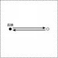
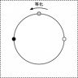
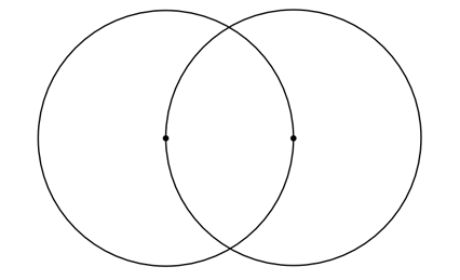
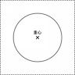
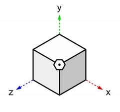

| ヌーソロジー基本概要＋(プラス) | |
| 佐道 来夢 & 半田 広宣(監修) | |
| (2017) | |
はじめに ～「ヌーソロジー」とは何か？～
まず、『ヌーソロジー』とは何か？について、最低限のことを説明しておく。
『ヌーソロジー』とは、『半田広宣（ハンダ コウセン）』という人が提唱した、独自の思想体系のようなもので、半田さんのTwitter上では、「ヌーソロジーとは、物質と精神の関係を空間という視点から接合しようとする具体的なイデア論」と説明されている。ここで、「物質」は、物理学や自然科学などの理系分野。「精神」は、人文学や神秘思想などの文系分野との関わりが強いので、その双方の架け橋となる思想体系になるのではないかという展望がある。
そして、元は『冥王星のオコツト（OCOT）』と名乗る、チャネリングソースの情報から作られている。1989年、コウセンさんが自分の専門である物理学の研究をする日々を送っていた所、突然それは起きたらしく、それは頭の中に入り込むようにやってきて、対話を求めてきたらしい。チャネリングの形式としては、その頭の中にいる「何か」との対話の日々ということになる。（詳細は、書籍『2013：人類が神を見る日』を参照。）
初めは、コウセンさんは、自身に起こったことに対して半信半疑でいたが、それはとてつもない情報を提供してくるということが分かり、その内容をワープロで打ち込むことにし、それを『シリウスファイル』と名付けることにした。そして、オコツトとの対話は約1995年で終わり、その後も解読作業が続いた。そして、その内容が、「ヌーソロジー」という思想体系としてまとめられることになる。
書籍がいくつか出たが、「精神世界」「スピリチュアル」などのコーナーに置かれる割に、難しい用語や数式、学者の名前なんかがいっぱい出てくる難解な本・・・というのが一般的な印象ではないかと思われる。その難解さ、絡んでくる分野の多様さは、代表書籍である『2013：シリウス革命』を軽く見ると分かる。そうして難解でメジャーにならない中、水面下でファンがいたりした。そして、「2013年」という、ヌーソロジーで重要視される年になって以来、また活発に動き始めた。
自分がネット上に公開したテキスト「Raimuのヌーソロジー入門」にて、ヌーソロジーの内容を説明している。その中の「ヌーソロジー基本概要」などを整理しつつ、その他に必要な情報を入れ、半田広宣さんによる監修の元、基本テキストとして相応しいように改良を行い、さらに、「変換人生活のためのヒント」をテーマにテキストを加えたのが本書の内容である。ヌーソロジーの参考書のように扱って欲しい。
■ヌーソロジーとグノーシス思想
ヌーソロジーの持つ方向性と古代グノーシス思想について
まず、始めに、ヌーソロジーと関わりの深い「グノーシス」について述べていく。
「グノーシス（gnosis)」とは何か？「グノーシス」とは、「認識」（あるいは「知識」）という意味であるが、それは主に古代において「神の知性」とも呼ばれていた「叡智」の認識にあたる。この「叡智」とは、知識として頭で理解するようなものではなく、自身の精神の中で何か直接的に体験することによって知るものである・・・という考え方が古代にはあった。
また、グノーシスの考え方では、人間の「自己」の中には、この「叡智」に通じている「神性」というのがあり、それを認識することも重要視される。従って、「グノーシス」は自己の本質を認識することにも結びついている。
紀元前からある古代思想として、この「グノーシス」を追求する立場というのがあった。それから、他にも「神秘思想」にカテゴライズされ、深淵な「宇宙論」や「哲学」を保持している立場というのもあった。古代エジプトのヘルメス学、古代ペルシャの宇宙哲学、ギリシャのオルフェウス教、カルデアの占星学・・・などがそれに該当する。これらの正確な起源をさかのぼるのは、考古学的に少し難しい所だが、ヘレニズム時代と呼ばれる頃（紀元前約334～西暦30年頃）にそれらの思想が合流してまとまった動きがあり、古代の「秘教」や「魔術」、「オカルティズム」の思想において、それらに追従する一派というのがあった。
紀元前からあるそうした動きが、原始キリスト教の一派として流れてくるようになる。これが「グノーシス主義」と呼ばれ、後に、「キリスト教グノーシス主義」として定着するようになる。
グノーシス主義には、狭義の意味と広義の意味とがあるが、狭義の意味としては、キリスト教の一派として存在する「キリスト教グノーシス主義」になり、広義の意味としては、それ以前からある、普遍的な「グノーシス」を追求する立場になる。ここではこれを「グノーシス思想」と呼ぶことにする。
グノーシス思想の特徴
キリスト教内部で発生した「キリスト教グノーシス主義」は、特有の説なども付加されて持つようになり、グノーシス思想とはまた別の特徴があるが、そのベースにあるものは、ヘレニズム時代にできた「グノーシス」の考え方に基づく宇宙論である。
有名なのが、反宇宙的な考え方であり、この宇宙を作り出したのは「善の神様」と言えるような志向神であるが、人間の世界を作り出したのはそれとは別に「悪の神様」と言えるような神様だという風に考えられている。この「悪の神様」にあたるのが「デミウルゴス」などとも呼ばれている。従って、この世界はまるで牢獄のようなものなので、「人生は牢獄である」という風に捉えるのも、グノーシス思想の特徴となる。
人間はこの「デミウルゴス」の作り出した地上の世界から、自らの中にある神性を認識し、至高神のいる天上の世界へと向かう...というのが、グノーシス思想の簡単なシナリオとなる。地上の世界と天上の世界との間には、「星辰界」と呼ばれる領域に7つの階層があり、この7つの階層に、月⇒水星⇒金星⇒太陽⇒火星⇒木星⇒土星といった、7つの星を当てはめて考える一派もいた。
他にも、「善と悪」、「真と偽」、「霊と肉体」、「イデアと物質」、「男性原理と女性原理」といった二元論で物事を捉える特徴がある。その他の細かい所は、広まった時代や場所、流派によって異なる。組織的に統一的に運営されていたというよりかは、影響力の高い流派が出てきたり、時には対立する流派が出てくることによって発展していったのが、グノーシス思想の特徴と言っても良い。
蘇ったグノーシス思想
ヌーソロジーは「蘇ったグノーシス思想」とも言われている。その目的は、『変換人型ゲシュタルト』と呼ばれるものを認識しつつ、「グノーシス」を行うことだからである。そうしている内に、自分自身の「自己」であったり、「霊魂」であったり、哲学者プラトンが「イデア」と呼ぶものなどが、知識ではなく実感のレベルで分かってくるようになってくる。それから、グノーシス思想の特徴として「二元論」を扱うというのがあるが、ヌーソロジーでは、「物質」と「精神」の二つを、よりシステマティックに、双方を否定することなく、ニューサイエンスっぽく扱っていくことになる。
■ヌーソロジー年表
ヌーソロジーが時系列的にどのように進められて行ったかについて見ていこう。
これまで半田広宣さんが実行してきた、代表的な事例について取り上げる。
1985年：オコツト前のチャネリング体験、「オリオンのノミ艦長」受信
1989年：「冥王星のオコツト(OCOT)」受信
1993年：ヌースコーポレーションの設立
1995年：オコツトとの交信が途絶える
1997年：書籍「2013：人類が神を見る日」の初版刊行
1999年：書籍「2013：シリウス革命」刊行
2001年：書籍「2013：光の箱船」刊行
2008年：書籍「2013：人類が神を見る日～アドバンスド・エディション～」刊行，「ヌース理論」から「ヌーソロジー」へと改名
2009年：2009年ヌーソロジーレクチャー開始
2010年：電子書籍「The Ark Of Photon [ digital edition ]」刊行
※筆者（来夢）がヌーソロジー研究を始めたのはおよそこの辺り
2012年：「オリオンのノミ艦長」についての情報が初めて明かされる
2013年：通称「シリウス元年」，電子書籍「2013：人類が神を見る日～デジタル・エディション～」刊行，書籍「反転の創造空間<<シリウス>>への超突入! 」刊行，2013年ヌーソロジーレクチャー開始
2015年：書籍「物質の究極と人間の意識」刊行，2015年大阪ヌーソロジーレクチャーの開始
2016年：メールマガジン「AQUA FLAT」発刊
まず、「冥王星のオコツト(OCOT)」が表れたのは、1989年のことだが、1985年に「オリオンのノミ艦長」という存在とのアクセスがあったという話がある。半田広宣さん自身がこの情報を明かしたのは、2012年になってからであり、そこでは、チャネリングを受けたのはコウセンさんだけでなく、コウセンさんの兄や姉まで含んだ全体的な問題だったという、驚愕のエピソードがあった。この話はかなり長くなる話であり、『2013：人類が神を見る日』のデジタル書籍版付属の「メモリアルレクチャーDVD」にて話されている。
冥王星のオコツトの情報を元に、コウセンさんは「7の機械」と呼ばれるジェネレーターを初めて作成。電気エネルギーをヒーリングエネルギーに変換する技術だろうか？そうした技術を用いて健康商品を販売するべく、1993年に「ヌースコーポレーション」を設立する。
オコツトの声が聞こえなくなってくるのは1995年。それ以降は、これまで記録した「シリウスファイル」を元に「ヌース理論」（当時の名称）の研究を続ける。
初めて書籍が出たのは1997年の『2013：人類が神を見る日』。次いで、『2013：シリウス革命』や『2013：光の箱船』などが出るようになる。ここからしばし、活動休止の空白期間が出てくる・・・
2008年になって、書籍『2013：人類が神を見る日～アドバンスド・エディション～』が刊行されたり、当時は「ヌース理論」だった名称が「ヌーソロジー」へと改名されたりする。「～理論」と付いている名称に、色々と指摘があり、無理を感じていたという理由がある。
2009年に福岡で『2009年ヌーソロジーレクチャー』も始められることになる。これまでのヌーソロジーの情報は一旦、ここでまとめられる。
そして、2013年。ヌーソロジーでは「シリウス元年」と呼ばれていて、ここからまた活発に動こうということになった。そういうわけで『2013年ヌーソロジーレクチャー』が開始された。中山康直さんとの共著で、書籍『反転の創造空間<<シリウス>>への超突入!』も刊行された。
そこから先も・・・色々と活動が起きている。「ヌーソロジー×現代物理学」のアプローチとして、書籍『物質の究極と人間の意識』が佐藤博紀博士との共著で出てくる。最近では、「ルドルフ・シュタイナー」との接合が試みられていたり、それから「カタカムナ」との接合も試みられている。カタカムナと縁のある「日本神性」についての話がよく出てくるようになったのも、およそ2013年以降の話である。
■ヌーソロジーが目指すものまとめ
ここで、ヌーソロジーの目指すものというのを、視点別で分けて整理してみようと思う。というのも、ヌーソロジーは、元が壮大で膨大な情報なため、話も壮大で一般人に向かないものになりがちだからである。
ヌーソロジーが目指すものをまとめると、以下のようなものが挙げられる。
＜地上視点＞
自己認識のフレームワーク
＜上層視点＞
霊的叡知と物質的知性との接合
＜人類史視点＞
ユダヤ的なものの彼方へ。日本精神の発芽
＜究極視点＞
素粒子の構造と人間の意識との相関関係の解明
＜総合視点＞
霊性を先手にした能動的知性の発展
それでは、それぞれについて説明していく。
＜地上視点＞
自己認識のフレームワーク
何かと壮大で究極的な話になりがちなヌーソロジーだが、まずやるべきことはこの「自己認識」という所から、だと言うことができる。こういう情報もちゃんと提供しているのがヌーソロジーである。
「自己」とは何か？という問題について突き詰めることは、一般的な人にとっても、それぞれ自分のためにもなることだと思う。
ヌーソロジーは先ほど述べた通り、「グノーシス思想」というものと考え方に近い。グノーシス思想で目指している神性は「アイオーン（Aion）」とも呼ばれているが、そうした神性に通じている「自己」というのがあり、それはヌーソロジーの目指す方向性にも通じている。日本にある「仏教」も、元々はグノーシス思想が入り込んでるものでもあり、そうした「自己」は、「仏性」を持った自分という言い方もできる。仏教ではそうした存在が「仏」と呼ばれていると解釈することができる。
ここで言われている「自己」とは、自分が普段自分だと思ってる「自我」のような意識とは違うものである。人間が普段自分だと思っている「自我」は、「他人にとって見えてるであろう自分」や「客観的に認識できる自分」をベースに構築されているということを、心理学者ラカンが言った。それは、「鏡に映った自分」でもあり、「鏡像」だと言うこともできる。
「自己」を発見するには、そうした鏡像が作り出す自分とは違った自分というのを探す必要がある。それは、人間の無意識に潜むものであり、心理学者ユングの言った「Self（自己）」という概念にも該当する。
この「自己」を発見し、認識することは、ヌーソロジーの目的の一つでもある。
人間は、あらゆる「他者なるもの」の要求に答えつづけることで、「自己」を見失う運命というのを持っている。本来の自分を取り戻す為には、こうした運命を変える必要がある。「他者なるもの」に従い続けるような、受動的な生き方をしていると、自分が本来持ってるエネルギーを他者に取られ続けるような人生になってしまう。それはある意味では安全な生き方と言うことはできるが・・・社会全体が危うくなることで安全とは言えなくなる生き方でもある。どちらを選ぶかを選択することは重要だと思う。
社会的な「他者なるもの」を主体とする生き方をするのではなく、「自己」を主体とする生き方をすることで、物質的な常識からは考えられない所からもエネルギーが湧くようになり、「自己」の持つエネルギーやパワーを発揮して能動的に活躍することもできるようになる。
こうした問題は、「自己」と「他者」の在り方の問題でもあり、「社会」と「自分」をめぐる、あらゆる問題の解決にも通じていたりする。自分自身が精神的にも物質的にも充実していながらも、それを他人にも分かち合えるような意識というのがある。そのような意識がなるべく多い社会の方が、良い社会になると思う。
ヌーソロジーはこうした「自己発見」もとい「自己探求」を、幾何学や数学を絡めて、明確に定義をしつつ行うことができる。合理的でもあるその方法論は、いわば「フレームワーク」と言っても良いものである。この「フレームワーク」は、数学的な4次元や5次元といった概念と、人間の意識との関連性についてが絡んでいる所でもある。
＜上層視点＞
霊的叡知と物質的知性との接合
「自己認識」や「自己探求」の道において、「自己」を追求することは、「霊性」を追求することであり、「物質」に対する見方を変えることでもある。
こうした「霊性」に追従したモノの見方を身につけることは、「死後の世界」のモノの見方を知ることにもなるが、実際の自分の在り方としては生きていることにもなるので、生きて物質的な世界を見ながらも、死後のような霊的世界にも触れることにもなる。このように、霊的世界とも物質世界も行き来できるという、両生類的な存在が、ヌーソロジーでは『変換人』と呼ばれる。
ヌーソロジーでは、『変換人型ゲシュタルト』という思考様式を学ぶという目的がある。それをすると物質の内部と外部の見方が入れ替わる...なんてことも起きると言われている。従来の3次元空間的な物質の見方に加えて、それを「反転」させた特殊なモノの見方というのが身につくようになる。
こうした変換人形ゲシュタルトの中には、相互了解が取れる「型」というのがあり、そうした枠組みを使って霊性を探求していく。この「型」は、従来の物質知や、数学を利用することができる。そうやって、霊性を重要視しながらも、理性の重要性も忘れないで取り組んでいくのがヌーソロジーである。
語られてることとしては、『シリウス』という存在がそういう思想を持っている。シリウスは恒星の名前にもなっているが、古代の神話の中で語り継がれている神聖な存在でもある。また、シリウスは物質と精神とを調整する力も持っている。
人間の世界と霊的世界との関わり方を突き詰めていくと、物質か精神か、あるいは、理想的か社会的か、偏らないことの必要性も見えてくることになる。
さらに突き詰めていくと、物質主義的なものと、精神主義的なものの主軸というのがあることに気付くが、その双方を認めることにもなる。こうしたことが、人間の意識進化という道にも通じている。
人間の意識進化の話は、その背後の宇宙的存在まで含めた意識進化という、壮大な話にもなっていくが、ひとまずは、身近な所から見ていくべきであり、先程の「自己認識」の話が先になると思うが、突き詰めるとそういう話の重要性も少しは分かってくるようになると思う。
＜人類史視点＞
ユダヤ的なものの彼方へ。日本精神の発芽
日本を含め、今の世の中は資本主義が支配していると言っていいものである。
西洋文明が主な発端となっている資本主義は、ユダヤ人の持つ思想との関連性が強い。ユダヤ思想とは一神教的思想であり、今日のキリスト教にもそれは受け継がれている。
ユダヤ人の生き方が「金融」というシステムや、ユダヤ金融資本というのを生んだという話もある。この「金融」というシステムやユダヤ金融資本が、資本主義において莫大な力を持っている。
それらの一神教の作り出す風潮のアンチテーゼとして、ユダヤ人の中ではユダヤ神秘主義というのが生まれ、これが後にカバラという思想体系にも発展することになる。また、西洋では今に至るまでにあらゆるアンチテーゼが生み出されており、それが秘教や密議、魔術という形になって影で語り継がれている。それから、東洋では、西洋とは逆に、霊的な思想や多神教的な思想というのを持っていて、それが西洋文明のアンチテーゼと合流する動きなどもあった。
しかし、それらのアンチテーゼは、時代の影で脈々と受け継がれていって機能していながらも、国家や社会の根本を変える程の規模の力を持つことはできなかったという実状があり、大きな力を持つには至らなかったと言うことができる。また、霊的な思想が極端な思想におちいることや、宗教のように形骸化する展開でなかなか上手くいかないこともあった。東洋の霊的な思想の力には、それはそれで限界があった。
西洋資本主義文明に行っても、東洋霊的文明に行っても行き詰まる、このジレンマを克服する道は、西洋の思想と東洋の思想の統合の道でもある。
日本という国は、アジア唯一の先進国となった国としても有名だが、西洋的・一神教的な側面と、東洋的・多神教的な側面とを合わせ持つ文明となっている。神道や日本神話の構造を見ると、それがよく分かるようになっている。具体的には、アマテラス神とスサノオ神の共存関係がそこに現れており、前者の一派は天津神、後者の一派は国津神と呼ばれている。そして、それらが「和する」ことを目的とする考え方が、日本思想の根底にある。
こうした日本思想が表れているのが、「日本語」という言葉であり、この言葉の使い方が特殊なのが日本民族の特徴で、これが新たな可能性を持っている。日本語は、他の言語と比べると「言霊」の持つ力というのが強く、これは「言葉」を、記号ではなく「精神」として扱うという思想の表れとなっている。これこそが日本語本来の力である。
ヌーソロジーで言われている、物質と精神とを接合するという目的が、そういう道に通じている。また、チャネリングソースの「オコツト」は、日本の神様と思われる節もあり、その思想を重要視している。
＜究極視点＞
素粒子の構造と人間の意識との相関関係の解明
これは、先程の「霊的叡知と物質的知性との接合」にも絡んだ具体的な内容にあたる。
物理学の世界で、1920年代頃から明らかになってきた「素粒子」の構造は、人間の意識との関連性があるということを「オコツト」は言った。ヌーソロジーの元となっている「オコツト」と「冥王星」の思想としては、ここに重点を置いている側面が強く、ここは半田広宣さんがメインで取り組んでいる所でもある。
「素粒子」とは「物質」の大元になるものであり、対して、「人間の意識」は「霊」と言えるものであるため、これは、「物質」を「霊」として見ることにも繋がっている。
ヌーソロジーには、人間の意識の「型」や「構造」にあたるものを突き詰めていく方針があるが、「素粒子」と「意識」との関連性を追及することは、それらをより精密に記述するということにもなる。
また、古代からも伝えられている霊的な叡智を、現代人が築き上げた科学的な知識と接合するという目的もある。これによって、霊的なものは「力」を持つようになり、それによって変革を起こすことも可能となる。
こうした話は、数学や物理学の中でも特に難関な、量子力学の話にもなり、かなり難しい領域の話となるが、これによって何か、具体的な発明品などが出来上がって、世の中にインパクトを与えられるようになると良いと思う。
＜総合視点＞
霊性を先手にした能動的知性の発展
オコツトが提示した情報の中に、『NOOS（ノウス）』と呼んだものがある。これは「ヌーソロジー（Noosology）」の語源でもあり、コウセンさんは「能動的知性」だと説明している。「霊性を先手とするための知性」だと言うこともできる。それから、「旋回する知性」とも言われている。精神と物質との間を動き回っていて、そこでどちらかに停滞し、堕落することのない動きをしているものである。
「ヌーソロジー」の名前の由来がこれなので、ヌーソロジーとは、総合的にはそれを追求するものと言うことができる。この『NOOS』を探求することは、哲学者プラトンが「イデア」と呼んだものを認識することでもある。加えて、ギリシャ語で、宇宙的な「知性」を表す言葉である「NOUS（ヌース）」というのがあり、ヌーソロジーの名前の由来としてそことも掛け合わせてあるだけあり、考え方的にはギリシャに少し近いのかもしれない。
『NOOS』の逆が『NOS（ノス）』と言われている。『NOOS』を「男なるもの」とした場合、『NOS』は「女なるもの」ということになる。そして、『NOOS』は、こうした『NOS』との関わりがあってこそ、「旋回する知性」としての特性が活きるようになる。
その為、そうした「女なるもの」ものとの交差であったり、関わり方であったりも、それはそれで大事な話となる。
■４つの基本因子
さて、ヌーソロジー情報の内容に入る。まずは、４つの基本因子となるものからだ。
ヌーソロジーでは、割と幾何学的な、ミクロ寄りの視点の世界において、
『負荷』・『反映』・『等化』・『中和』という、原理的な概念がある。ヌーソロジーは、この『負荷』・『反映』・『等化』・『中和』の４つの原理で、あらゆる構造を捉えようとするので、これについてそれぞれ説明する。
『負荷』――とある始原となる存在があったとして、そこから開始する作用にあたる。数字では、「1」に対応する。

『反映』――『負荷』という開始の力に対して生まれる、それとは逆向きの作用にあたる。数字では、「2」に対応する。

『等化』――『負荷』と『反映』という、背反するものを「統合」するような「回転」の作用、または、対称性を見出す作用にあたる。数字では、「3」に対応する。これは、『負荷』と『反映』を、新たな次元の視点で見る力を持つ。
『中和』――『等化』の回転に対する逆回転。回転が相殺されることにより、「分離」するような作用にあたる。また、双方の対称性を見出すのを拒む作用にもあたる。数字では、「4」に対応する。これは、新しい物質を誕生させる力を持っている。
これらは、『負荷』→『反映』→『等化』→『中和』と発展していく構造を持つ。この４つの用語は、ヌーソロジーにおいてあらゆる所に出てくる基礎的な用語なので、押さえておくべき用語である。また、『負荷』と『反映』、『等化』と『中和』などは、それぞれ、「１」と「２」、「３」と「４」に対応しているわけだが、このように奇数と偶数に対応している組が作る対立関係を、『対化』と言う。『対化』は、それぞれを『等化』するために、必要な関係になる。
■ペンターブ・システム
そして、4番目の『中和』の次に、さらに続きがある。
『新たなる負荷』――3番目の『等化』と、4番目の『中和』を、『対化』として捉え、さらに、『等化』をすることによって、5番目の存在が生ずるわけだが、この5番目が、次のステップの1番目にあたる、新たなる『負荷』を創り出す。
このように、4番目の次の5番目が、次のレベルの新たなる1番目を作るという、5段階構成のシステムがあり、これを、『ペンターブ・システム』と呼ぶ。
中でも、3段階で「13番目」を作るシステムが、ヌーソロジーにおいて、特に重要視される。また、オコツト達は、「5」という数を、無限の象徴として扱っており、「1｣よりも「5」が先行して存在しているものとして考えている...という話がある。これも、この『ペンターブ・システム』に基づいた考え方になっており、「5」は、次のレベルの「1｣として必ず表れ、再度、「1」→「2」→「3｣→「4」→「5」という発展によって、循環していく。こうして、「5」は、世界を形作るための無限循環の象徴として、扱うことができるというわけである。
■「精神」と「付帯質」。それから仏教用語
続いて、『精神』と『付帯質』という言葉がある。まず、『付帯質』から説明すると、オコツトによると「『付帯質』とはあなたがたが物質と呼んでいるもののことです」と説明される。また、「プレアデスとは『付帯質』が作り出されている場のことである。」という説明もある。つまり、『付帯質』とは、ひとまずの意味としては、物質であるということができる。また、正式な意味としては、「対化を『中和』する力そのもの」にあたる。これは、『中和』は物質を作っているということでもある。
ここで少し「仏教」から考察すると、仏教には、「識別することが、目の前の現実を作る」といった言葉がある。また、「荘子」の思想の中でも、人間の「識別する心」が、あらゆる想念や、人生に関わる心の変容を作り出しているといった趣旨の言葉がある。そして、「すべては認識したものによって映し出されていて、そして、作り出されている」というような意味である、「唯識」という仏教用語がある。ここで、「識別することによって作られた物質」を、『付帯質』と解釈すると、しっくり来る。同様に、物事を「識別する」という意識は、『中和』に該当する。よって、「対化を『中和』する力によって、物質が作られる」という理屈は、整合性が取れるようになる。
次に、『精神』という用語がある。ここでいう『精神』は、ヌーソロジー的な『精神』であり、一般的に使われる「精神」とは違う、特別な意味を持つものだが、これは、『付帯質』とは逆に、「対化を『等化』する力そのもの」にあたる。これは、『付帯質』と逆ととると、「識別しないこと」となる。仏教において、「空」という言葉がある。この「空」の意味については、より詳しい長い説明をすることもできるが、簡単に言うと、「識別しないこと」をずっとしていった先にある境地のことを言っていると思われる。つまり、これは、ヌーソロジー的には、『等化』をし続けることであり、また、『等化』をずっとしていった先にある境地と関わりがある。また、これは「対化を『等化』する力」を持つ、『精神』そのものにもあたると解釈することもできる。『等化』とは、なかなかイメージのし難いものであり、他にも様々な説明の仕方ができるものだが、仏教的には、「分けて捉えない（しかし、対称性は見えている）」「あるがまま捉える」「許す」「統合した視野」などといった言葉で説明することができる。このように、ヌーソロジーの概念とは、仏教的な概念とも通じているということになる。
■全体像における４つの意識領域
まずは、全体的な世界観の話である。ヌーソロジーにおける全体的な世界像を構成している、『オリオン』・『シリウス』・『プレアデス』・『スマル』という、４つの存在について説明する。これらは、一般的には星の名前とされているが、ヌーソロジーでは、「意識の領域」とでもいえるような、特別な意味として扱う。それらの４つがある宇宙全体の世界を、『タカヒマラ』という。（ただ、最近はヌーソロジーが宗教的なものに見られることを避けるためか、コウセンさんはこの名称を使用しなくなっている。）
まずは、我々の意識と関わりの強い『プレアデス』と『シリウス』から順に説明する。
＜プレアデス＞
簡単にいうと我々が今いる世界のことを言っていて、『人間』のいる、あるいは、『人間』を作り出している意識の領域にあたる。人間である我々が、世界を認識するにあたって動く意識の領域でもある。つまり、我々のいる「地上」の領域と、その「地上」の作る（正確には地上を作っている）意識の領域と言うことができる。それから、我々が現在いる「地上」から、離れようとする際の、無意識の領域も、『プレアデス』に含んでいる。無意識があくまでも無意識である領域までは『プレアデス』であり、無意識が意識化されるようになった領域が『シリウス』と言うことができる。ひとまずは、「人間の営みが行われている意識の領域」といった所である。今現在、我々がいる領域であるので、これまでも付き合っていた領域でもあり、これから、新たな視点で付き合うべき領域でもある。
＜シリウス＞
『プレアデス』に対して上次元にある存在にあたる。『ヒト』と呼ばれる存在がいる。これから我々が意識進化をしていく上で、『オリオン』よりも身近に関わることになる存在である。『シリウス』のことを説明するのに、よく、哲学者プラトンの提唱した「イデア」という概念が使われる。また、無意識の深層にあるものでもある。無意識は、ある領域までは、『プレアデス』領域に該当するが、ある場所を超えると、『シリウス』領域に入ることになる。また、その世界観は、『プレアデス』のような単純な物質構造ではなく、様々な物の見方が、我々に対して「反転」していて、不思議な幾何構造のような世界らしい。こうした見方を理解するには、『変換人型ゲシュタルト』というものが必要になってくると言われている。
＜オリオン＞
宇宙の根源の胎盤となる場所・・・といった説明ができるものである。『シリウス』より更に上次元にある。『真実の人間』と呼ばれる存在がいる。オコツトによると、「大いなる精神の進化の母胎となる力のすべてが存在するところ」「あなたがたの概念でいえば、神が存在する場所......そのようなものでしょうか」などの説明がされている。
＜スマル＞
『プレアデス』に対して下次元にある。『オリオン』とは対称的な存在である。オコツトの説明によると、「『オリオン』と『プレアデス』の関係が完全に転倒したところに生み出されている虚無のようなもの。進化の無限性の反対側に存在させられている」「『精神』の力が完全に失われてしまった空間領域」「人間が『シリウス』との連結を完全に断ってしまった空間」などと説明されている。よって、主に「虚無」と呼ばれる。コンピューターの作るデジタル空間がそれにあたると言われている。悪いモノのように扱うこともでき、ネガティブなイメージで捉えることもできるが、進化のためには無くてはならないものでもある。オコツトはあくまで、『スマル』については、「人間の意識進化の反映として出現してくるもの」「新しい精神を作り出すためには必要な影の部分」などのことを述べている。
■流れる４つの力
次に、『オリオン』・『シリウス』・『プレアデス』・『スマル』の全体を流れる、「力」について説明する。なお、ここではひとまず、分かりやすいように、「力」と記述して説明するが、正確には、そうした「力」を持つ存在、あるいは、そうした「力」の構造そのもの･･･といったものにあたる。『シリウス』では『定質』・『性質』が、『プレアデス』においては、そこから反対の力へと転倒した、『反性質』・『反定質』という力が流れている。以下、それぞれについて説明していく。
＜定質＞
『シリウス』領域において、『オリオン』へと向かう力。『シリウス』領域において『等化』の7段階の力を持つ。『定質』の「定」とは、「確実化した力」という意味を持ち、これは精神の力が明確な幾何学的な形として意識化されている状態を表している。従って我々は、この「確実化した力」というのは何か？というのを、深く探求していく必要がある。人間が「植物」を食べた時、この力が強まるらしい。また、天体における「太陽」が『定質』に関係していると言われている。
＜性質＞
『シリウス』領域において、『プレアデス』へと向かう力。『シリウス』領域においての『中和』の方向性を持つ。人間を作り出している意識の方向性と言われる。『性質』の「性」とは、「異性」の「性」であり、男性と女性とに分かれる「性」にあたる。宇宙の仕組みとしては、こうした、「男性」と「女性」のような、二元的な「性」に分かれると、そこから、無限の物を産出することができる。そして、これが『性質』の持つ力なのではないか？と思われる。人間が「動物」を食べた時、この力が強まるらしい。また、天体における「月」が『性質』に関係していると言われている。
＜反定質＞
『プレアデス』領域において、『スマル』へと向かう力。『シリウス』領域にある『定質』と、進化の方向性が逆であり、似て非なるものにあたる。『プレアデス』領域においての『中和』の方向性を持つ。『シリウス』領域においては、『定質』の持つ「確実化した力」に主体性を持って向かっていけば進化できる構造になっているが、『プレアデス』領域においては、それは逆向きの力へと働く。『プレアデス』領域において、本来なら『オリオン』に向かっているような「定められた力」を見出すのを間違え、その間違えて捉えたものを神のように崇め、自分自身の道徳として従った時、意識は『反定質』の方向へと向かうことになり、『スマル』へと向かうことになる。「宗教」「法律」「戦争」「科学」「機械」・・・『反定質』の力を持つ存在の例は色々と挙げることができるが、人間の文明の基盤を作っているものだとも言うことができる。
＜反性質＞
『プレアデス』領域において、『シリウス』へと向かう力。『プレアデス』領域においての『等化』の方向性を持つ。つまり、我々がこれから向かっていくべき方向性にあたる。実に人間的ではあるが、創造性と発展性があり、真理にも根付いているものにあたる方向性である。「芸術」などは、『反性質』の方向性にあるのではないか？と思われる。ヌーソロジーにて、『次元観察子』を認識することや、『変換人型ゲシュタルト』を学ぶことで、『シリウス』領域への空間が開けてくる。
■「ノウス（NOOS）」と「ノス（NOS）」
それから、『ノウス（NOOS）』と『ノス（NOS）』という力がある。
『ノウス（NOOS）』は『シリウス』においては『定質』と『反性質』、『ノス（NOS）』は『プレアデス』においては『性質』と『反定質』として働く力、にあたる。つまり、『ノウス（NOOS）』は『スマル』→『オリオン』向きの力であり、『ノス（NOS）』は『オリオン』→『スマル』向きの力になる。『ノウス（NOOS）』は、『プレアデス』領域においても、『シリウス』領域においても、常に『等化』の力を持っているもので、『ノス（NOS）』は、常に『中和』の力を持っているものである。これは、宇宙で割と根元的に働く、二つの原理にあたる。『ノウス（NOOS）』は、説明するなら「能動的知性」と言われ、神が思考によって、物質を作った力にあたり、『ノス（NOS）』は、それに対し「受動的知性」と言われ、その創造の力を受け取っている力...と言われている。その二つの力は、双方がぶつかり合っていて、そのぶつかった所に、人間の自我や、人間そのものを構成する心などが生まれている...と言われている。
オコツトによると、『ノウス（NOOS）』は女性の性欲、『ノス（NOS）』は男性の性欲と関係があると言われており、これらは、宇宙で働いている、根元的な、男性性と女性性と言うこともできる。また、『ノウス（NOOS）』は「青の流れ」、『ノス（NOS）』は「赤の流れ」と言われている。これは、コウセンさんが、『ノウス（NOOS）』・『ノス（NOS）』の流れを説明する時、必ず、「ノウス⇒青～シアン系統」、「ノス⇒赤～マゼンタ系統」の色を使い分けて説明しているからであるが、これには深い意味がある。恐らく、『ノウス（NOOS）』は青系統に根付いたものを持っていて、『ノス（NOS）』は赤系統に根付いたものを持っている。従って、『ノウス（NOOS）』を追うと青、『ノス（NOS）』を追うと赤のイメージが浮かんでくるようになる。それは、青は、清浄で知性的で、欲望を鎮めて、意識を深層心理へと導くような、神秘的な蒼色で、赤は、頭に血が登るような色で、欲望を刺激し、顕在意識を強めるような、熱気のある紅色になる。
『ノウス（NOOS）』と『ノス（NOS）』は、正確には、それぞれ、『ノウス（NOOS）』は「奇数系の『観察子』」、『ノス（NOS）』は「偶数系の『観察子』」と呼ばれる。こうした見方の方が、ヌーソロジーの本質的な構造に根付いているので、なるべく、この定義に従った理解をした方が良い。この点については、『観察子』の解説の時に、再度説明する。こうしたものは、「善」と「悪」ではなく、「奇数」と「偶数」のような関係として見る方が望ましい。
人間は、『ノウス（NOOS）』と『ノス（NOS）』によって生まれるものであり、その双方に挟まれながら、生きていると言われている。それは、魂的な要素は『ノウス（NOOS）』を、肉体的な要素は『ノス（NOS）』を主に持っている。従って、人間はこの双方の流れの板挟みとなって生きることが、余儀なくされており、魂的な要素を「正義」と言い切ることも、肉体的な要素を「正義」と言い切ることもできない。その複合精神から葛藤が生まれることもあるし、異なる正義が対立することもある。人間の世界で、絶対的な「善」や絶対的な「悪」が定まらないのは、こうした仕組みがあるからだと思う。このように、人間というものは、本質的には「善悪の彼岸にある」ものだと、言うことができるわけである。
■タカヒマラ・テンプレート
オコツトが『タカヒマラ』を説明するにあたって、『タカヒマラ・テンプレート』という構造のビジョンを転送してきたと言われているが、その形によると、『タカヒマラ』の形は、以下の図の形の方が近いと思われる。
（自分はこの図を、『２Ｄタカヒマラ・テンプレート』と名付けている。）
『ヌーソロジー』にて、『オリオン』や『シリウス』は上次元にあると言われているが、それは、一口に「上次元」といっても、単純に「上にある」といったような構造ではない。この辺りは、ヌーソロジーに実際に取り組む上で、掴んでいく必要がある。
『シリウス』と『プレアデス』の間には、ゲシュタルトがひっくり返るほどの「ねじれ」があるので、この図の方がより実体に近いと思われる。
さて、ここで、参考までに、オコツトによる、『定質』・『性質』・『反定質』・『反性質』関連の説明を記述すると、以下のようになる。
――――この交信の目的は何なのですか？
「はい、『オリオン』によって開始された、『シリウス』への方向採集です。『プレアデス』で生み出された力を『シリウス』へ変換するために関与しています。」
――――定質とは何ですか？
「『オリオン』が作り出した進化の力そのもののことです。」
――――性質とは何ですか？
「人間が生み出されている状態そのものです。」
――――反定質とは何ですか？
「人間が悪と呼ぶ概念に似ています。『プレアデス』が進化を失っている状態です。」
――――反性質とは何ですか？
「『プレアデス』が作り出す意識進化の方向性のようなものです。」
――――ノウスとノスとは何ですか？
「周回作用の対化における核のようなもの。」
――――周回作用の対化とは？
「『タカヒマラ』における意識の流れの核に当たるものです。『精神』の『対化』を生み出すために作り出された『付帯質』の変換を行なっている二つの方向性の力。」
これらの用語は、始めのうちは、すぐには、正確に実体を掴めず、正しいイメージができないかもしれないが、今後も出てくる概念であるので、「実践編」などをずっと取り組んでいくうちに、イメージを深めていくと良い。
■人型イメージに囚われないこと
『オリオン』『シリウス』『プレアデス』『スマル』は、それぞれ、古来の西洋で発展した世界観で説明すると、「神（創造主）」「天上（天使）」「地上（人間）」「地獄（サタン）」に対応している。また、『ノウス（NOOS）』や『定質』は「天使的な力」、『ノス（NOS）』や『性質』は「悪魔的な力」と言うことができる。
人間は、こう説明された時、人型イメージを作って捉えたがるものであり、人型イメージの方が捉えやすいものである。しかし、こうしたイメージこそ、「『人間型ゲシュタルト』の囚われ」であるとされ、『反定質』を引き起こす。つまり、それは進化の力を持っておらず、その本質を理解することができないわけである。このイメージができたからと言って、「理解した」と言うことはできず、むしろ、イメージに固執していては、本質的な理解からは遠ざかる一方になる。一部の宗教が、偶像崇拝を禁じるのは、これが理由なのだと思う。
また、『シリウス』では天使的な力に近い『定質』は、人間の世界では『反定質』へと転じ、『シリウス』では悪魔的な力に近い『性質』は、人間の世界では『反性質』へと転じる。従って、この辺りは少し複雑な関係を作り出す構造になっている。
そもそも、「宗教」とは、オコツトによると「人間の知識によって歪曲化されたもの」と言われている。つまり、ヌーソロジー的な真実が、安易な人間的創作として捉えられているわけである。人型イメージは親しみやすく、「知識」として頭に入れやすいので、それはそれで良いのだが、あくまで、本質はそうしたものではないことを押さえておく必要がある。
グノーシスとその為の手段
こうした物事の探求において、本来必要なことは「グノーシス(gnosis)」の姿勢である。つまり、これらの世界観を、体験のレベルで理解していく必要がある。
だからそのためのアプローチとして、古今東西で人間は様々なことを編み出してきた。西洋の魔術も、「人間が神のようになる」ことを目的として発展している所があるが、これは、自らの「神性の認識」をして、これらの世界観を掴むためだと言える。
西洋魔術の世界ではそのための「儀式魔術」というのが発達していったが、これは、霊的な世界観を掴んでいく動きだと言うことができる。有名な魔術師「アレイスター・クロウリー」なども、様々なことを実践した人物であり、彼のデザインしたタロットカードである「トート・タロット」には工夫がある。「トート・タロット」は、カードの絵に人の顔などがハッキリと描かれていない作りになっているが、これも「人型イメージ」を避けるためだと言うことができる。
しかし、魔術の世界も考え方は様々であり、必ずしも成功する方向性ばかりでなかったことは否定できない。
「仏教」なんかも「グノーシス思想」を持つ宗教であり、様々な流派がある中、あの手この手が使われているが、やはり、偶像に縛られてる側面や、その他の理由で上手くいかなかった側面もある。
これらの霊的な世界観の本質は「イデア」であり、「理そのもの」「自然そのもの」「構造そのもの」のようなものと言って良い。
『ヌーソロジー』では、主に「幾何学」を使ってそれに取り組み、そこでの実体験的な理解から、真実を掴むことを目指して行く。それが、人間にとっての進化の方向性である『反性質』の方向性を『定質』として覚醒させる意味を持つ。その実践として『変換人型ゲシュタルト』の習得がある。
■１３の「観察子」
次に、ヌーソロジーにおいて出てくる、『観察子』という概念について説明する。それは、まず、「真理を解き明かすための、およそ13の要素」という説明が妥当かと思う。（14あるとも解釈される。）オコツトが提示した、宇宙的なシステムを理論的に解析するための「鍵」である。コウセンさんは「霊」とも説明している。よって、やや抽象的なものでもある。それぞれの『観察子』の理解を深めることで、全体のシステムの理解も深めることができる。『観察子』は、『ペンターブ・システム』に対応していて、その数は「13」で区切られる。
一方、他者側との関係を含めて見ていく場合は『セプターブ・システム』（7段階システム）に対応している。その時は「14」が加わり、「13～14」が新たな対化として作り出され、そこから新しい精神が作り出される仕組みになっている。
これから我々が、当分つき合っていくのは、『プレアデス』にある観察子と言われる『次元観察子』というものなので、以下、『次元観察子』で説明する。
まず、観察子は、「奇数」と「偶数」で違う働きをする所がポイントである。
観察子は二つ一組で構成され、数字が奇数の観察子は「等化側」などと呼ばれ、数字が偶数の観察子は「中和側」などと呼ばれる。『次元観察子』の場合は、「ψ（プサイ）」というギリシャ文字に数字をつけて表記される。この数字が、『ペンターブ・システム』における、『負荷』・『反映』・『等化』・『中和』、のように発展していく。1（負荷）→2（反映）→3（等化・新たな負荷）→4（中和・新たな負荷の反映）→5（さらに等化・さらに新たな負荷）・・・と続いていく。「6」は、「5」という新たな『負荷』の『反映』であり、「7」は、さらにその『等化』というわけである。こうして、単純に上昇していく構造を持つ。そして、それは、3段階の『ペンターブ・システム』に対応していて、全部で「13」あるとされる（「14」あるとも言われる）が、「8」で一つ区切りがある。これは後ほど詳しく説明する。
そして、「奇数系の観察子は『ノウス（NOOS）』」「偶数系の観察子は『ノス（NOS）』」と呼ばれる。そもそも、これが『ノウス』と『ノス』の本質である。『ノウス』を「天使的な力」、『ノス』を「悪魔的な力」などと捉えるのではなく、こうした理解の深め方をする必要がある。ノウス、つまり奇数系の観察子が『等化』の力を持っている。ノスは、『中和』の力である。これが重要であり、いわゆる「天使的な力」と「悪魔的な力」の本質を、この双方の力がそれぞれ持っている。
また、奇数系観察子は「自己の方向側」、偶数系観察子は「他者の方向側」と呼ぶこともできる。これは、ヌーソロジーをより詳しく学んでいくと分かることだが、『等化』は意識をより本性的な「自己」の方向へ、『中和』は意識をより本性的な「他者」の方向へともたらす。
まとめると、奇数系は、「等化側」「負荷側」「ノウス側」「自己の方向側」と呼ぶことができ、偶数系は、「中和側」「反映側」「ノス側」「他者の方向側」と呼ぶことができる。この区別が、ヌーソロジーにおいて、重要な所になる。奇数系観察子と偶数系観察子を、実践的に学ぶことで、その本質がだんだんと理解できるようになってくる。
■「次元観察子ψ」について
次に、『次元観察子ψ』について、詳しく説明する。まず、コウセンさんが、オコツトとの交信の初期の段階で自動書記によって伝えられた図がある。（「2013：人類が神を見る日」より引用。）
交信初期の時点では、この図が『タカヒマラ』の全体像を表している図だと説明され、この中の「13」の波が、『次元観察子』であると説明される。それは、『定質』による上昇と、『性質』による下降の際、「13」に分けられた構造になる。
『次元観察子』は、オコツトによると「『タカヒマラ』を構成している次元ユニットのようなもの」と説明される。やはり、『次元観察子』は、「次元ユニット」と呼ぶしかないような、曖昧なものにあたると思われる。この13の次元ユニットは、『変換人型ゲシュタルト』を身につける為に、我々が一つ一つ理解を深めていくべきものでもある。それは、人間の意識を取り巻く、幾何学的な構造のようなものであり、これが、『プレアデス』の領域における、人間の意識の構造を作り出している。
『次元観察子』の全体像は、以下の図のようになる。
右に書いてある対応要素も、押さえておくと良い。この中で、現在の人間の意識の位置にあたるのが「ψ1～ψ2」である。ここには、単純に現代物理学が「空間」と「時間」と呼んでいるものがあり、そして、その二つしかない領域にあたる。人間の自我は、ここから自分自身を根拠づけていた無意識領域（『反性質』）を自意識化し、『定質』を作り上げるために上昇していくことになる。「ψ1～ψ2」の意識でしか世界を捉えてないものを、「ψ3～ψ4」の意識で捉えられるように拡張していく。よってまず、「ψ3～ψ4」と当分向き合うことになる。これから、「ψ3～ψ4」や、「ψ5～ψ6」といったものを、どんどん『顕在化』というのをしていく。『顕在化』とは、それぞれの観察子の構造をハッキリ捉え、それを知覚として認識し、それが自分の中にもある精神の構造を作り上げていると理解することである。「元々、無意識にあったものを顕在状態にする」という意味で『顕在化』と呼ぶ。『顕在化』は、「ψ3が顕在化する」「ψ5が顕在化する」などという使われ方をする。これは、突き詰めると、より深い意味も持っている用語だが、ひとまずの意味はそんな所である。
『次元観察子』は、「ψ1～ψ8」で、『元止揚』と言われていて、ここに区切りがある。全部だと13もあるが、まずはここで一息つけるようにするという姿勢で良いと思う。「ψ9～ψ10」は『調整質』、「ψ11～ψ12」は『中性質』、「ψ13～」は『変換質』と呼ばれる。ここは、まずは言葉だけ押さえておけば良い所である。
■「次元観察子」と原子との関係
また、『次元観察子』は、素粒子や電子や原子の構造など、ミクロな物質の構造や、その付近の物理法則に関係していると言われていて、それはそれぞれ以下のようになる。
ψ1～ψ2： 時空（ψ1：空間、ψ2：時間）
ψ3～ψ4： 光子の波動関数（ψ3：虚軸、ψ4：実軸）
ψ5〜ψ6：複素ヒルベルト空間（ψ5 : u-クォーク、ψ6 : d-クォーク）
それぞれがU(1)対称性を持つ。
ψ7～ψ8：クォークのアイソスピン空間（ψ7：陽子、ψ8：中性子）
それぞれがSU(2)対称性を持つ。
ここは、ヌーソロジーの醍醐味ともいえる所であり、「人間の意識の構造」であるはずの『次元観察子』が、こうした素粒子などの構造に関係があると言われている。これが、「物質は、人間の精神を投影して、存在しているものである。」というオコツトの説を、具体的に解明する手がかりになる。
精神と物質の関係を解明する意義
ヌーソロジーでよく言われている文言として「素粒子の正体は人間の意識である。」というのがあるが、『次元観察子』を「素粒子の構造」と絡めて考えるのは、そのまま「人間の意識」を「素粒子」と絡めて考えることに繋がってくる。
素粒子と意識とを完全に分離したものと捉えない考え方は、そのまま「物質」と「精神」を完全に分離したものと捉えない考え方に繋がる。これがコウセンさんの言う「物質と精神の関係を空間という視点から接合しようとする具体的なイデア論」ということである。これによって、「精神」が力を持つようになることが目的の中にある。
これまで、1989年～2016年・・・とヌーソロジーが進められてきたが、未だにこの辺りは研究段階と言っても良い。そうして不完全な所がありながらも、アップデートしつつ進められているのがヌーソロジーである。そして、それはこれからも発展していく展望のあるものである。
人間の意識が物理学と関係あるなどそんな馬鹿な・・・と眉をひそめる者もいるかもしれないが、思うに「光速度」という概念がその境界にある気がする。光速度以下はやはり物質であり、それは従来の古典物理学で説明される世界である。光速度以上になると・・・ミクロの世界や意識と接合してくる。そして、そこは「時間が存在しない領域」にもなってくる。そこにあるのが「複素空間」というものであり、霊的なもの、精神的なものも絡んだ空間に入り込むことになるのではないか？と思う。
ここで、オコツトが素粒子に関することを言った時の対話内容を記述しておく。（「2013：人類が神を見る日」より引用）
――――量子世界の構造が日常的な空間と何らかの関係を持っていると言われるのですか？
「はい、もちろんです。『シリウス』から見ると量子の世界とあなたがたの意識を構成している空間とは完全に重畳しています」
――――意識と空間と量子が同じもの・・・・・・・・・？
「主体と客体の関係性に形作られている幾何学が展開されていく空間は、おそらくあなたがたが複素空間と呼んでいるものと数学的には同型対応していくことになるでしょう。量子的な空間とあなたがたの意識を構成している空間は、わたしたちにとっては全く同一のものとして見えています。あなたがたが量子世界の中に見ている構造は、意識を構成するための高次元空間の射影のようなものと考えて下さい」
――――つまり、わたしたちの意識構造が、量子世界の構造と同一のものであるとおっしゃるのですか
「そのとおりです。だからこそ、このゲシュタルトはあなた方の意識に変化を起こさせる力を持っているのです。素粒子内部の世界とあなたがたの意識のシステムとはいわば鏡像関係にあります。物質としての素粒子の構造は『プレアデス的統制（科学）』の中で詳しく論じられているわけですから、それが認識のシステムとして形成されている空間構造と一致するかどうかは容易に確かめることができるはずです。そして、もしそれが完全に合致したとすれば、そのときあなたがたはそれこそ自分自身が宇宙の全存在物そのものであることを身をもって感覚化することでしょう」
■「大系観察子」について
『プレアデス』にある観察子は『次元観察子ψ』と呼ばれるのに対し、『シリウス』にある観察子は、『大系観察子Ω』と呼ばれる。それは、『プレアデス』と同様に、「Ω（オメガ）」に数字が付き、数も同じ「13」であり、奇数系と偶数系があり、『等化』と『中和』を行なう構造になっている。『シリウス』には、『ヒト』と呼ばれる存在がいるので、その『ヒト』が親しんでいる観察子にあたる。また、『シリウス』にある「Ω1～Ω2」は、『プレアデス』にある「ψ7～ψ8」が構成に関わっていると言われている。
つまり、ψ7～ψ8→Ω1～Ω2、ψ9～ψ10→Ω3～Ω4、ψ11～ψ12→Ω5～Ω6・・・という、相関関係がある。また、ψ1～ψ2、ψ3～ψ4などの背景には、数字を＋6した、ψ7～ψ8、ψ9～ψ10や、Ω1～Ω2、Ω3～Ω4などがあることを、押さえておくと良い。それから、『ψ7』で、『Ω1』を見出すことができるが、それは、『ψ7』が、『シリウス』の領域に、確実に足を踏み入れるための鍵を持っていることにもなる。
『大系観察子』は、書籍「2013：シリウス革命」の後半などに、詳しい解説がされている。化学の教科書の原子の周期表に出てくるような、原子の種類などが、『大系観察子』に関係している。また、『大系観察子』は、『次元観察子』より、高次元の意識を司っているものにあたるが、それを「自分の中にもある、意識の構造である」とハッキリ認識するのは、『次元観察子』と比べると遥かに困難であるので、ここでは詳しい説明を省く。「意識の構造である」とまで、ハッキリしたことを掴むにおいて、『Ω1』を理解するための最低条件が、『ψ7』となる。なので、背後にそうしたものがあることだけ押さえておいて、詳しい所はひとまず置いておく。
「大系観察子」に対応するミクロ物質
『大系観察子』は、化学の世界で出てくるような原子の種類に関係していると言われている。これは、『シリウス』の領域のレベルで物質を見ると、原子の構造というのは、『大系観察子』という、精神の構造を表しているということになる。そのさわりだけでも押さえておくと、以下のようになる。
Ω1～Ω2：「水素」（原子番号1 番)～「酸素」（原子番号8番）
Ω3～Ω4：「フッ素」（原子番号9 番)～「イオン」（原子番号10番）
Ω5～Ω6：「ナトリウム」（原子番号11番)～「マグネシウム」（原子番号12番）
Ω7～Ω8：「アルミニウム」（原子番号13 番)～「ケイ素」（原子番号14番）
Ω9～Ω10：「リン」（原子番号15番)～「イオウ」（原子番号16番）
Ω11～Ω12：「塩素」（原子番号17 番)～「チタン」（原子番号22番）
Ω13～Ω14：「イットリウム」（原子番号23 番)～「鉄」（原子番号26番）
（※書籍『シリウス革命』の執筆当時より大幅な変更されているので学習者は注意。）
これらについては、正直な所、まだハッキリと分かっていない所が多く、特に、後半になるにつれ、曖昧になりやすくなっている。また、さすがに、『大系観察子』であるので、これらの構造を「精神の構造だ」と、自覚的に理解するのは、なかなか難しいものだと思う。ただ、人間の意識の背後には、こうした、原子が「精神を持つもの」として、まるで精霊のように活動している世界観があるということだけ、押さえておくと良いと思う。
■ヌーソロジーと「カバラ」について
これまで、ヌーソロジーの『観察子』について説明してきたが、これはユダヤ教神秘主義である「カバラ」における「生命の樹（セフィロトの樹）」にも対応している。
「生命の樹」とは何か？
まず、「カバラ」についてと、それから、「生命の樹とは何か？」について説明しておこう。カバラは「ユダヤ神秘主義」として生まれたものである。「ユダヤ神秘主義」とは、「ユダヤ教」の弊害に対抗するために、ユダヤ人が編み出した神秘主義である。そして、それは「グノーシス」の思想を持つものであり、古代エジプトの密議の思想が受け継がれている。ユダヤ教は「神を信じることが正義」である思想に対し、ユダヤ神秘主義は「グノーシス」のように神性を認識し、「自らが神のようになる」という思想である。ユダヤ教のアンチテーゼとして生まれたので、その思想は正反対である。
この「ユダヤ神秘主義」がユダヤ人の中で脈々と受け継がれていき、12世紀頃に大きな動きが出てきて「カバラ」というのが生まれることになる。（ちなみに、「カバラ」は、「受け入れる」や「伝承する」という意味を持つ言葉である。）「カバラ」は、ユダヤ人にとっては、「旧約聖書」を解釈するためのツールとしても使われている。「カバラ」の聖典で有力なものとして、「ゾハールの書（光輝の書）」という書物があり、そこに「生命の樹」についても書かれている。カバラに関する書物は他にもあるが、この書物が一番影響力があったカバラの聖典と捉えてもらっても良い。
異国に広まっていくカバラ
カバラに関して押さえておくべきことは、ユダヤ人が扱うカバラを「ユダヤ・カバラ」と呼ばれ、それ以外の人が扱うカバラを「キリスタン・カバラ」と呼ばれていることである。元々、ユダヤ人のものだったカバラは、どんどん他の国にも広まっていくようになるが、その中で影響力が高かったのは19世紀、「ゾハールの書（光輝の書）」のラテン語訳を、「マグレガー・メイザース」という「黄金の夜明け団」の創設メンバーの一人が英語に訳し、そこで広まったことである。今、日本に翻訳されて出ているカバラの本も「黄金の夜明け団」の影響を受けているものが多いと言っても良い。特に、近代魔術のカバラでは、「生命の樹」の「セフィラー」に「惑星」を割り当て扱われているが、元々のカバラでは惑星は割り当てられていない。惑星イメージで「生命の樹」を探求するのとしないのとでは差は大きい。「キリスタン・カバラ」は、ほとんど近代魔術のカバラが目立っているので、この辺りに関しては「近代魔術カバラ」と呼んでも良いかもしれない。
ひとまず、ここで押さえておくべきことは、「多くのカバラは二次創作である」ということである。従って、カバラを学ぶ場合は、それはユダヤ・カバラなのか、あるいは、何処の潮流からきた二次創作のカバラなのかを押さえつつ、真偽を見極めつつ学んでいく必要がある。ヌーソロジーでカバラを引用して使う場合も、「二次創作カバラ」だと言って良いだろう。
カバラとヌーソロジーの類似点と違い
カバラとヌーソロジーの共通点は、まず「グノーシス思想」を持つという所である。この点では一致してるため、情報の内容が似ていることがある。それから、そもそもカバラの「生命の樹」は、10の「セフィラー」というユニットのようなもので構成されているが、これは「真理を解き明かすための、およそ10の要素」と言えるようなものである。ヌーソロジーの観察子は「およそ13の要素」と言えるものであるため、この二つは似たものと捉えることができる。
しかし、カバラで神聖視されている数は「10」や「22」。ヌーソロジーでキリの良い数は、「12」や「13」や「14」、それから「7」や「8」と言った数である。ここに違いがある上に、片や12世紀頃のユダヤ人が編み出した聖典が元になっている。そのため、その思想の内容に違いがあることは当然である・・・しかし、双方の比較は、興味深いテーマとなる所だと思う。コウセンさんによるカバラ考察では、主に、イサク・ルーリアによる「ルーリア・カバラ」が用いられている。
■観察子と「生命の樹(セフィロトの樹)」
さて、「ヌーソロジー」の「観察子」と、「カバラ」の「生命の樹」を対応させると、以下の図のようになる。ヌーソロジーのカバラ対応は、「ルーリア・カバラ（ユダヤ・カバラ）」が使われている。
（※なお、『2013：シリウス革命』などの書籍では、「コクマー」と「ビナー」がこれとは逆になっているが、自分はこちらで解釈している。）
一番上の「ケテル」のある場所に、11と12と13があり、計「13」となる。
「マルクト」の位置から「ケテル」の位置へと「上昇」していくのは、近代魔術で扱われているカバラと一緒である。
さて、これまで「13」と説明してきたが、実は、「14」番目も存在する。
それは、「13」という奇数系の観察子の『反映』として、「14」という偶数系があるはずだからである。
しかし、14番目は、オコツトからの詳しい情報が曖昧な様子であり、特別な存在のようである。ここではひとまず、先ほどの「生命の樹」の図のように「13」で区切って説明していくことにする。「13」まで辿り着いた時、「14」が重要になるのだと思われる。
また、「12」で区切る方法もある。このカバラの図においては、「12」までで、それらの世界は、『プレアデス』の世界として、一旦閉じられている。そして、「それらよりさらに進化した存在」として、「13番目」がある。よって、「13」は、少し違う次元にあるので、「12」で区切るという手もある。
『観察子』は、「12」で区切ったり、「13」で区切ったり、「14」で区切ったりすることができるが、ひとまず、区切り方はそんな所である。
「生命の樹」と「観察子」の違い
このように「生命の樹」と「観察子」は非常に似ているが、いくつか違いもある。
まず、「生命の樹」のセフィラーは、一番上にある「ケテル」を「一番目」として扱っているが、ヌーソロジーの場合は順番が真逆であり「マルクト」に位置する場所が「一番目」である。そもそも、カバラは、一番下の「マルクト」を生成する過程を重要視していたと言うことができる。
それから、「ダァト」と呼ばれる箇所の扱いについてだが、カバラでは、これは「非セフィラー」とされていて、セフィラーとしてカウントされないが、「観察子」では『次元観察子ψ8』として扱われ、意識のユニットとして毅然と存在している。
「観察子」の意味と「セフィラー」の意味との整合性も、上手くいく所は上手くいくが、「ビナー」や「コクマー」に行き着く程、微妙になってくる。（ちなみに自分は、「コクマー」を「能動的感性」、「ビナー」を「受動的理性」と解釈しているが、ここが「Ω9（思形）」「Ω10（感性）」を割り当てるにおいて、微妙な所である。）
このような違いのある「生命の樹」と「観察子」であるが、「ゾハールの書（光輝の書）」に元々書いてある「生命の樹」と、ヌーソロジーの「観察子」は、「同じ形をしているが別物」と捉えるのが良いと思う。しかし、その二つに相関性はあるようで、片方を解釈することで、もう片方の認識が深まることがあるというのが、自分が実感していることである。
■観察子と西洋占星術における惑星との対応
『観察子』というものは、太陽系にある「惑星」とも対応している。惑星は、西洋占星術の世界では、精神の中の何かしらの作用を表すと言われているが、ヌーソロジーでは正しく、「『次元観察子』と『大系観察子』の双方の投影」と言われていて、意識進化のためのユニットとして働く。ちなみに、ここでは、「太陽」と「月」と「地球」も、「惑星」と同様に扱う。
以下、ヌーソロジーにおける、『観察子』と「惑星」の対応を、西洋占星術にて解釈されている例をキーワードにして並べつつ、合わせて述べていく。
※ここで出てくる「惑星X」とは、オコツトが、近年に新発見されると述べた惑星である。ただ、その発見については、現段階（2016年頃）では謎に包まれている。2003年に「エリス」という準惑星が発見されているが、その関連性は分からない。また、「冥王星」は、2006年に、正式な惑星の定義から外れたが、これは、科学の持っている見解として、ヌーソロジーでは、特に重用視はしない。ヌーソロジーにおける冥王星は、西洋占星術での扱いと同様、依然として、人間の意識において、重要な位置づけとなる惑星として扱うことになっている。
月のサイン（ψ2：時間・マクロ, Ω2）：
自分のパーソナリティ、受動性、ペルソナ（仮面）、子供の段階、女性的な面
水星のサイン（ψ3：主体, Ω3）：
知性、言語、伝達、スピード、神経
金星のサイン（ψ4：客体, Ω4）：
愛情、恋愛、情動、快楽、コミュニティ
太陽のサイン（ψ5：自己, Ω5）：
自分の本性、自主性、本領発揮、成熟した段階、中心
火星のサイン（ψ6：他者・自我, Ω6）：
闘志、戦い、闘争本能、武器、戦士の赤
木星のサイン（ψ7：意識進化, Ω7）：
成功、問題解決、和、学識と霊性の両方、賢者の青
土星のサイン（ψ8：時空, Ω8）：
試練、忍耐、現実的、機械、父なる黒
天王星のサイン（ψ9：人間の思形, Ω9）：
革命、前衛的、テクノロジー的なもの、学問
海王星のサイン（ψ10：人間の感性, Ω10）：
霊感、霊・夢・術・感性を使うもの全般、曖昧なもの、宗教
冥王星のサイン（ψ11：人間の定質, Ω11）：
根源的な自己、究極、死と再生
惑星Xのサイン（ψ12：人間の性質, Ω12）：
？？？、資本主義の混沌？、人間らしさ？
これらの意味は、『次元観察子』とも関係しているが、より本質的な所は『大系観察子』が該当すると思われる。
ただし、人間が親しみやすいのは、『次元観察子』なので、ひとまずは、そのイメージとして扱った方が良いと思う。『次元観察子』と「惑星」には、相関関係があることは、自分の実践経験においても確認しているので、その二つを併用して理解することで、お互いの理解を深めることが可能である。
■その他、「観察子」における重要事項
ケイブコンパスについて
『次元観察子』や『大系観察子』といった『観察子』の概念があるが、コウセンさんによると、『観察子』については『ケイブコンパス』というのが用いられて説明される。
それは、以下の図のようなものであり、ψ1～ψ10までは、以下のように当てはめられる。
この『ケイブコンパス』は、コウセンさんが2008年以降あたりから積極的に使うようになったものである。これは、意識進化の道における「羅針盤」などとも言われている。『次元観察子』だけでなく、『大系観察子』でもそのまま使うことができる。
恐らくそれは2000年頃、コウセンさんがヌーソロジーの理解を深めていたある日、「ドゥルーズ＝ガタリ」の哲学の本を読んでいた時に、パズルのピース、ロボットのパーツが揃うように思いついたらしい。
ポイントとしては、奇数系の観察子は「青」で書かれ、偶数系の観察子は「赤」で書かれていて、それらが「対」となるようにまとまっていることである。それから、ψ7～ψ8から、他者側の『元止揚』（偶数系にとっての奇数系、奇数系にとっての偶数系）に入り込み、それぞれψ9とψ10を構成するようになる。
ψ7より先、ψ9～ψ10以降を重要視する『ケイブコンパス』は、少し上級者向けという気がするが、最近のコウセンさんの説明ではよく使われているので押さえておくべき所である。
他者側の観察子と「凝縮化」について
さて、これまで説明してきた『観察子』は、自分の精神構造としての観察子、もとい、「自己」の持ってる観察子にあたるものだが、同様に、「他者」の持ってる観察子というものもあり、これが重要視される。それは、「他者側の観察子」と呼ばれ、「*」を付けて「ψ*1～ψ*14」と記述される。（他者側を考慮することにより、14番目が重要視される。）
それから、『凝縮化』という現象があり、それによって、「自己」の観察子は、「他者」の観察子に、重なり合うことができて、入り込むことができる。
例えば、「ψ7」から、『凝縮化』という現象によって、「ψ*1」に入り込むという構造がある。同様に、ψ8→ψ*2、ψ9→ψ*3、ψ10→ψ*4、ψ11→ψ*5・・・というように、それぞれ、－6をした他者側の観察子に重り合って、入り込むことができる。
これは、「自己」と「他者」とは、究極的には繋がりのあるものであるということになるが、より正確な理解は、『次元観察子ψ7』を認識することで習得した方が良いと思う。他者側を考慮していくことは、初心者の段階から取り組んでいくにおいては、少し難易度が高いと思うので、『ψ7』を理解してからの方が、それは安定する。
「脈性観察子Φ」について
『脈性観察子』というのがある。これは、「φ（ファイ）」に数字がついて、『脈性観察子φ』というように記述される。これは、ヌーソロジーの代表書籍である、「シリウス革命」や「人類が神を見る日」にも載っていない、マイナーな用語にあたる。
『脈性観察子』は、『大系観察子』が『シリウス』に存在している観察子であるのと同じように、『オリオン』に存在している観察子とされている。
『大系観察子』は、原子や分子の生成と関わりが深いが、『脈性観察子』はそれ以上のものにあたる。これによって、分子の生成から発展した、たんぱく質の生成、細胞の生成、人体を構成する組織の生成などに発展し、生物の世界や、人間の生体をより詳しく解明することができるという展望があるらしいが、詳細はよく分からない。かなりの高次元なので、多くの者にとっては、恐らく、挑んでも無駄な領域になる。『Ω7』あたりの理解が、本格的に挑むための、最低限のレベルになるのではないかと思われる。
■高次の「観察子」について
「思形」と「感性」
『次元観察子ψ9』は『人間の思形』、『次元観察子ψ10』は『人間の感性』と呼ばれている。同様に、『大系観察子Ω9』は『ヒトの思形』、『大系観察子Ω10』は『ヒトの感性』である。そして、『思形』と『感性』は、人間の精神構造において、重要な要素を構成している。それぞれ、以下のような意味を持つ。
《思形》（ψ9,Ω9）
男性原理、切る、論理、言語、理性
《感性》（ψ10,Ω10）
女性原理、包む、情動、感覚、霊性
『思形』が表すものは、主に、思考など、形成を司っているものなどである。それから、「言葉」などもそうである。ロジカルで、カクカクした、「切る」性質を持ったイメージのものだと解釈できる。それに対し、『感性』は、情動的なもの、美術的なもの、霊的なものなど、俗にいう「感性」を使うものを司っている。それから、「感覚」もそうである。曖昧な夢のように、フワフワしたものであり、「包む」性質を持ったイメージのものと解釈できる。これは恐らく、人間の脳にある「左脳」と「右脳」の働きの違いなどにも現れているのではないかと思われる。ヌーソロジーにおいて、『思形』は「男性原理」、『感性』は「女性原理」のように扱われる。
『次元観察子ψ9』・『次元観察子ψ10』も、それぞれそのような役割を持つ。また、ヌーソロジーでは、この二つのうち、どちらを重要視するかというと、奇数系の観察子の方を先手と置くことになっているので、『思形』の方を重要視するわけである。ただ、これはヌーソロジーが『顕在化』においての思考だからと考えると良い。『顕在化』が起こる前の人間の意識においては『思形』よりも『感性』の方を重要視する。また、そのどちらか一方があれば良いというものでもなく、その両方が必要だという風に扱う。『思形』と『感性』の関係を、こうした、「奇数系観察子」と「偶数系観察子」の持つ関係として理解することが、ヌーソロジーにおいて重要な所になる。
『ψ7』以降の『ψ9』などからは、『凝縮化』が絡んでくるようになり、その構造が、これまでとは大きく異なることになる。より詳しい説明は、『ψ3』や、『ψ7』などと合わせて学んだ方が良いので、ここでは詳しい説明は省く。『ψ7』と『ψ8』の『等化』によって、『ψ9』を見出すことができるが、なるべく、実践を絡めたやり方で理解した方が良いと思う。
観察子としての「定質」と「性質」
『次元観察子ψ11』は『人間の定質』、『次元観察子ψ12』は『人間の性質』と言われている。これは、冒頭で出てきた『タカヒマラ・テンプレート』の『定質』・『性質』と、呼び名は似ているが、一応、違うものとして扱うべきものである。ただ、「力」のイメージとしては、冒頭での『定質』・『性質』のイメージに近いものである。やはり、『人間の定質』は、「あらゆる二元を等化する力」として、強いものを持っている。『人間の性質』は、その『反映』である。『次元観察子』は、「ψ11～ψ12」で、一旦、『プレアデス』の領域として、およそ閉じられているので、その中で、最も高い、『等化』の力を持つものと、『中和』の力を持つものにあたる。『人間の定質』と『人間の性質』の正確な理解は、『ψ9』と『ψ10』までを理解してから『等化』をする際に、挑んだ方が良い所である。
「観察精神」とその反映
『次元観察子ψ13』は、『人間の観察精神』と呼ばれている。『観察精神』というものは、『タカヒマラ』を構成しているものとしての『タカヒマラの観察精神』にあたるものもあり、これは、『オリオン』に存在すると言われている。従って、『オリオン』とも関係が深い場所である。『次元観察子』は、「ψ11～ψ12」で、『プレアデス』として、一旦閉じられているが、『ψ13』は、『ψ11』と『ψ12』の『等化』であり、それは、『プレアデス』からは、少し飛び抜けていて、『シリウス』に入り込んでいる。「ψ11～ψ12」までは、『プレアデス』内での『等化』と『中和』が行なわれているが、『ψ13』は、『プレアデス自体』を進化させる力を持っていると言うことができる。
それから、『ψ13の反映』というのがあり、それが『次元観察子ψ14』にあたる。『次元観察子ψ14』は、書籍『シリウス革命』など、初期のヌーソロジーではあまり出てこなかったが、後々になってよく扱われるようになったものである。
この辺りは、かなりの高次元であるので、ひとまずは正確に理解する気にはならずに、概要だけ頭に入れておくように押さえておいた方が良い所である。
■その他、重要事項
「人間の外面」と「人間の内面」について
さて、ここで、その他に重要な用語について説明するが、まずは、『人間の外面』と『人間の内面』についてである。これは、我々の意識が、『次元観察子ψ1～ψ2』にある状態から、『次元観察子ψ3～ψ4』を学ぶ時に出てくる用語である。つまり、入門の時に早速理解しなければいけない、重要な用語にあたる。従って、詳しくは、『次元観察子』を学んでいく時に出てくるが、ここでさわりだけでも説明しておく。
まず、『人間の内面』というのは、いわば「普通の空間」にあるものである。ニュートン力学で説明できるような空間であり、3次元座標と時間軸で表せるような、科学にとっては、ごくあたりまえの空間である。一般の人にとっては、言語や一般概念と関係し、これが「普通の空間」という風に認知される。これは、通常の人間にとっては、「外在世界」とされるものにあたる。しかし、ヌーソロジー的には、それは人間の精神の内側にあるから「内面」という名称がついているという所が重要になる。ここが逆になっている所がミソであり、ここを理解するためには、空間認識のゲシュタルトをひっくり返さなければいけないということになる。『次元観察子』でいうと、「ψ4のある場所」に該当し、『次元観察子ψ4』が理解できることで、より深く理解することができる。
次に、『人間の外面』だが、これは、「反転した空間」という場所にある。そしてそれは、「普通の空間」にあるものとは違って、あらゆる知覚や感覚のイメージが詰まっている場所にあたり、通常の人間にとっては、「内在世界」とされるものにあたる。しかし、ヌーソロジー的には、それは「外面」とされる。これは、人間の「主観」との関わりが強いものにあたる。『人間の外面』を発見することは、自分自身の「主観」をメインにして、物事を見ていくことに通じている。逆に、「客観」との関わりが強いのが、『人間の内面』である。『人間の外面』は「主観」、『人間の内面』は「客観」に対応しているので、それぞれを追求していくことで、そうした世界に参入していくことができる。また、『人間の外面』は、「4次元空間」が存在している場所でもある。逆に、『人間の内面』には、3次元空間と直線的時間（4次元時空でも良い）が存在しており、それぞれ、「4次元空間：主観」「4次元時空：客観」という風に対応している。このように、「4次元空間」と『人間の外面』とは、お互いに通じ合っているので、『人間の外面』の理解に取り組むことは、「4次元空間」の真の構造を掴むことにもなる。『人間の外面』は、『次元観察子』でいうと、「ψ3のある場所」に該当し、『次元観察子ψ3』が具体的に分かることで、正確に理解することができる。より正確な理解は、「ψ3」の理解に取り組むに伴い、深めていく必要がある。
ひとまず、ψ1～ψ2→ψ3へと移行する際に、自身の意識を、この『人間の外面』領域に移動させる必要がある。それから、普段は、「ψ1～ψ2」にある「人間の自我」が、高次元へと参入するにあたって、この『人間の外面』が、一番近い高次元領域にあたる。従って、「自我」を持った人間が、高次元へと移行するためには、自分の意識を、如何にして、この『人間の外面』へと持っていくかが、当分の課題となる。詳しくは、『次元観察子ψ1～ψ4』の辺りを習得する際に、理解する必要がある。
「人間型ゲシュタルト」、「変換人型ゲシュタルト」についてのおさらい
ここで、『人間型ゲシュタルト』、『変換人型ゲシュタルト』について説明しておく。まず、「ゲシュタルト」とは、思考様式のことである。『人間型ゲシュタルト』は、「物質空間」とも説明されるが、人間が持つ、普段の「思考様式」でもある。「常識」と言い替えて説明することもできるものである。ヌーソロジー的には、それは、「物質空間が絶対である」という思い込みや、「物質空間の作る思考様式」にも該当していく。ヌーソロジー的には、『変換人』になるためには、これを脱する必要があり、そのためには、物質空間の作り出しているゲシュタルトを解体する必要がある。
『変換人型ゲシュタルト』とは、ヌーソロジーにおいて、『変換人』と呼ばれている存在が持つゲシュタルトである。『変換人』とは、ヌーソロジーで言われている、「人間がこれからなるべきもの」「これから出現するもの」にあたるものである。ヌーソロジーの世界観では、『シリウス』に存在する『ヒト』という存在と、『プレアデス』に存在する『人間』がいるわけだが、この『ヒト』と『人間』の中間ぐらいの存在にあたる。『プレアデス』から『シリウス』に移行する際の、橋渡し役にもなるのが『変換人』である。『変換人』は、「両生類的存在」とも言われている。それは、陸と水とを行き来できるように、『プレアデス』と『シリウス』を行き来することができる存在だからである。そして、『変換人型ゲシュタルト』とは、そうした『変換人』の持つ思考様式であり、物質の捉え方にあたるわけである。ヌーソロジーでは、これを主に学んでいくことになる。『人間型ゲシュタルト』は、『次元観察子』でいうと、「ψ1～ψ2」のみの世界で閉じている知覚にある。そして、『変換人型ゲシュタルト』は、そこから、「ψ3～ψ4」を初めとして、「ψ3～ψ8」などの知覚をしていく中に含まれている。（目安として、「ψ8」までに、重要な区切りがある。）従って、『変換人型ゲシュタルト』を学ぶことは、『次元観察子』の構造を学んでいくことと、ほぼ同義となる。
また、『人間の外面』と『人間の内面』という言葉があるが、それぞれ、ゲシュタルト用語で説明すると、『変換人型ゲシュタルト』は、『人間の外面』側にあり、『人間型ゲシュタルト』は、『人間の内面』側にある。従って、『人間の外面』を知覚することは『変換人型ゲシュタルト』のベースの感覚を掴むことになり、『人間の内面』を知覚することは、『変換人型ゲシュタルト』にとっての『人間型ゲシュタルト』を掴むことになる。『変換人型ゲシュタルト』は、別名『トランスフォーマー型ゲシュタルト』とも呼ばれており、書籍『2013：人類が神を見る日 ～アドバンスド・エディション or デジタル・エディション～』には、『トランスフォーマー型ゲシュタルト・ベーシックプログラム』という章が載っており、こちらは、『変換人型ゲシュタルト』と『次元観察子ψ1～ψ8』を学ぶ上では、現時点で書籍化されている中で、かなり有力と言える情報である。それから、2017年にはシュタイナー思想とのコラボ本の出版も予定されており、そちらではさらに精密化された『次元観察子ψ1～ψ8』までの解説が予定されているらしいので、そちらも期待したい。
「融解作用」という悪
次に、割と日常生活とも関わりの強そうな用語がある。それは、『融解作用』と言い、オコツト情報から読み解くと、割と明確に「悪」を生み出すものとして働いているのではないか？と読みとることができる用語である。
これは、「自己」と「他者」の関係において、「他者」側を先手とし、主体性を持つものとして捉えることを言う。いわば、「自己」の意識より「他者」の意識を優先し、さらには「他者」である存在を「自己」だと錯覚して見てしまうという、自己の「他者化」というものにも該当する。
この『融解作用』は、『次元観察子』においては、自己の方向性にある奇数系観察子ではなく、他者の方向性にある偶数系観察子を先手とすることで、起きる作用のことを言う。そして、オコツト情報から解釈すると、「偶数系観察子を先手とする意識の総体」というのがあり、そして、それが過剰なまでに働いていくことで、「悪」が発生していくのではないか？と読みとることができる。「～ 「他者」なるものが「悪」なのではなく、「他者」を先手とすることで、「悪」が発生する ～」。これは、ヌーソロジーによって導かれる、一種の真理でもあるので、押さえておくと良い。
「迷化」について
それから、『迷化』という用語がある。これは古代から、特に宗教の世界において、幾度も起きていた現象にあたり、ヌーソロジーでは、「人間の意識が、とある『反性質』側にあたる言葉に対し、その構造を正しく捉えていないまま触れていると、『反定質』側へと転倒してしまう」というように説明されている。つまり、割と、スピリチュアルの界隈などでよく出てくるような、人間に進化をもたらすような「言葉」は、その言葉の本質が掴めない状態で触れていると、進化と逆方向へ行ってしまうということになる。簡単に言うと、ポジティブ側の言葉を、その本質を分からずに使い続けると、それがネガティブ側の意識を引き起こすということである。これは、人間が「神」という言葉を使うとき、しょっちゅう発生する出来事になる。「神」という言葉は、これ以上とないぐらい、人間が進化すること目指すための概念を、より簡潔に表した言葉になるが、単純な話、その本質を、全然分かってもいないのに、分かったつもりで使っていると、完全に逆方向の力が発生してしまうということである。これは、「神」だけではなく。「愛」「夢」「光輝く未来」「本当の自分」「平和実現」など、様々なポジティブ側のキャッチコピーというものも、こうした現象の発生の危険性が潜んでいる。
『迷化』は、これからヌーソロジーを学ぶにおいても発生しやすい働きでもある。ヌーソロジー用語である、『オリオン』や『シリウス』や『定質』、それから、それぞれの『次元観察子』や『人間の外面』などについて親しむ際も、その本質が分からないまま、「分かった」の状態に落とし込むと、危ない状態となる。従って、常に、なるべく「これで良いのか？」という見方で見る姿勢が求められる。常に思索していくスタンスであれば、この危険性はそれなりに免れる。「神」を探求する行為も、こうしたスタンスであるならば、それなりに有効になる。また、これは高次元の概念程、そうしたリスクが大きいということも、押さえておくべきことになる。『オリオン』よりも『シリウス』の方がいくらかやり易く、『次元観察子ψ7』よりも、『次元観察子ψ3』などの方がやりやすい。それから、『人間の外面』は『次元観察子ψ3』あたりの難易度であるので、割と積極的に取り組んでも良い所にあたる。
この『迷化』とは、「神」という言葉やスピリチュアルの界隈で語られているような言葉に囚われないために、知性的な視点でいるために押さえておくべきな、基本的な概念だと思う。
「キアスム」について
ヌーソロジーでは、『キアスム』という構造が重要視される。それは、「自己」と「他者」において、相互に役割が入れ替わる「２×２」の構造のことを言う。冒頭の『タカヒマラ』における、『定質』・『性質』・『反性質』・『反定質』の４つは、『シリウス』×『プレアデス』における関係なわけだが、ここにおいても、「２×２」の構造が現れている。『シリウス』と『プレアデス』は、この時、「自己」と「他者」のどちらかに対応していて、相互の２つの力の関係は、お互いに入れ替わっている。ヌーソロジーがベースの考え方として持つのは、「２元論」ではなく、こうした「４元論」であるというのが、重要な所である。
人間は、物事をなるべく単純に、１面的に見たがるものである。しかし、それはヌーソロジー的には、恐らく、「『付帯質』によるモノの見方」にあたる。これは、『プレアデス』の世界において、主に働く力でもある。また、哲学者ドゥルーズによると、「『同一性』の支配する世界」というように説明されている。真実を見極めるためには、こうした視点だけでなく、２面的に物事を見る必要がある。ヌーソロジー的な思考とは、「善⇔悪」の対立ではなく、「善悪⇔悪善」のような対立で物事をみることだと言われている。自分の中であっても、他人の中であっても、善の裏には悪があり、また、悪の裏には善があるものである。また、それが善悪に代わるものであったとしてもそうである。一見、善悪の構造に見えるものは、より奥を見てみると、違ったものが見えてくるものである。真相を見極める為には、目立って認識しやすいものだけを見ているだけでは、１面的で限られたものしか見えてこない。
『変換人型ゲシュタルト』を身につけ、『人間の外面』で物事が見えるようになった時、『奇数系観察子』と『偶数系観察子』が、「自己」と「他者」の関係において、その役割が相互に入れ替わるという仕組みが、ある程度は見えてくるようになる。このように、物事を２面的に見ることが、その物事の真実を見極めることに通じているため、ヌーソロジーでは、『キアスム』という構造を重要視する。
「円心」について
ヌーソロジーでは、「円の中心」と「円周」の作る考え方が重要となる。
上の図を見て欲しい。
右側の点は、左側の点を中心に円周上を回転しているとしよう。その様子を客観的に見た場合は、それは明らかに分かることである。
しかし、もし、右側の点に観測者が立っているとして、その観測者は、自分が動いているなど分からない状態で左側の点を見た場合、左側の点が右側の点（観測者自身）を中心に回っているように見えるのである。
以上の説明で分かり難い場合は、「太陽」と「月」と「地球」の関係で考えてみると分かりやすい。
ご存じの通り、地動説において、「地球」は「太陽」のまわりを回っていて、「月」は「地球」のまわりを回っている。これはニュートン物理学によって証明されるに至った事実とされている。しかし、古代の人達が単純に解釈していたように、普通に「地球」から見た場合は、「地球」を中心に「太陽」が回っているように見える。また、「月」から「地球」を見た場合も同様であり、「月」を中心に「地球」が回っているように見える。
ヌーソロジーでは、このように回転しているそれぞれの惑星がそれぞれの視点を持っていることを「惑星がそれぞれの次元を持っている」というように捉える。また、これは「自己」と「他者」の視点の関係においてもそうであり、それは、相互にとって反転している関係を持っているというように捉える。
ヌーソロジーでは、このように「円の中心」と「円周」があった場合、実はもう一つ反転した「円」が存在している...という風に捉える。これを『円心』という。

ヌーソロジーでは、「高次元」を捉えるにおいて、「他者の視点」や、「客観的な視点」とは逸脱した「主観的な視点」というのが重要となってくるため、ここでの『円心』の考え方が必要となってくる。
「重心」について
前述した『◇◆４つの基本因子◆◇』の節で、『負荷』『反映』『等化』『中和』という４つの基本因子について説明したが、これに付け加えると、『重心』という因子がある。
これは、数字でいうと0番目に該当する。

『0：重心』→『1：負荷』→『2：反映』→『3：等化』→『4：中和』と発展していき、さらに、『4：中和』から次のステージに入る手前のゼロポイントということにもなる。また、「1～4」の中心という言い方もできる。あらゆる「１」「２」「３」「４」に対応するもののバランスを取るための中間ポイントでもあり、「あらゆる変換における中点」と言うこともできる。このポイントはあらゆるものを『等化』するためにも重要となる。
この『重心』については、オコツトが「神」だと言ったことがある。そして、それは「力を持たないもの」だとも言った。それは「神」というよりも、老荘思想において「道（タオ）」と呼ばれるものに近いのかもしれない。陰陽に分かれる以前の存在であり、また、それは陰陽を変換する際にもキーとなる概念でもある。
それから、オコツトの言った『重心』というものは、普通に「人間の身体における重心」とも関わりがあるので、そういうものとして解釈しても良いようである。人間の身体における『重心』というのも大事であり、我々の私生活にとっても、それを見失わないように動いたり行動したりすることが、『等化』と『中和』のバランスを取ることにもなる。
これは武道の世界でも重要な概念であり、武道においては、自分の『重心』を崩さず、相手の『重心』を崩すことで、相手を怯ませ、「倒す」ことができる。現代においては、「武」というものはあまり重要視されないので、「智」における『重心』というのを探ってみると良いかもしれない。
人間はこの『重心』を見失わずに、どこまで動けるか、どこまで頭を働かすことができるか、というのが重要なのだと思う。そうすることで、「天」を味方につけたかのような、理に適った生き方をすることができる。人間として、それが出来るかどうかで、上手くいくかいかないかが決まるのではないか？と思う。
■ヌーソロジー全体像の総括
ヌーソロジーの全体的な流れ
ヌーソロジーの全体的な流れとしては、まずは全体像把握のための基本概要を押さえておいて、それから、今現在、我々がいるのは、『プレアデス』の『次元観察子ψ1～ψ2』の領域であり、そこから、『変換人型ゲシュタルト』を学んで、『ψ3』以降の知覚を拡張し、奇数系観察子と偶数系観察子の『等化』と『中和』を繰り返し、意識が『シリウス』領域に入ることを目指して行き、オコツトが『最終構成』と呼ぶもの（2013年頃から起こる大変革）に臨むということ・・・これが、ヌーソロジーにおける、ひとまずの王道的なストーリーだと、自分は思う。また、『変換人型ゲシュタルト』を具体的に学ぶことで、それぞれの用語のイメージを鮮明にすることができる。例えば、『定質』と『性質』のイメージを鮮明にした時、その力も鮮明に得ることができる。
まずは、「ψ1～ψ5」のあたりから
さて、『変換人型ゲシュタルト』を学ぶにあたって、今現在、我々がいる所は、『次元観察子ψ1～ψ2』であり、我々の「自我」も、『ψ1～ψ2』の中に閉じ込められているということになる。ここから、我々の自我は、まず、『次元観察子ψ3～ψ4』の領域に飛び出していくことになる。そして、『ψ3～ψ4』の双方の感覚が定着してきたら、次に、『ψ3～ψ4』の『等化』を行い、『次元観察子ψ5』を見出す。
『次元観察子ψ5』は、「自己」という概念に対応していて、それが、自分にとって大事な「自己」の発見にもあたる。従って、まずは、その辺りを目指すように、『人間の外面』と『人間の内面』周りの理解に、じっくりと取り組むのが良いと思う。
■ヌーソロジー全体と実践編の位置づけ
ここからは、ヌーソロジー本論の入門部に入る。それは、「実践編」のことである。
まず、その重要性について、全体を踏まえつつ、位置づけを確認する。
ヌーソロジーの全体をカテゴリー分けしてみると、恐らく、およそ以下のようになる。
他にも分け方があるかもしれないが、ひとまずは上記の通りで良いと思う。
この中で、「知識編―全体像知識」は、これまで『ヌーソロジー基本概要部』で述べてきたジャンルである。人間にとって「頭に知識を入れるだけ」というのは、そう難しいことではないと言うことができるが、問題はそこから先の「実践編」である。
ヌーソロジーの肝となる所は、やはり、オコツトが説明していた『カタチ』の認識だと、半田広宣さんは言っていた。ここでいう『カタチ』というのは、『次元観察子』で説明されているような精神構造のことだと思って良い。それは、余計な贅肉の一切を削ぎ落としたかのような、純粋なシステムであり、それ以外の情報は味付けに過ぎない、という側面もヌーソロジーには多々ある。『冥王星のオコツト』も、やはり「この送信の目的は、わたし自身、つまり『変換人型ゲシュタルト』をあなたにプログラムすることにあります」だと言っていた。「ゲシュタルト」のプログラムとは、「カタチ」の認識であり、つまり、我々がこれまで３次元空間を体験して来たが如く、『変換人』の空間を体験することである。
「ヌーソロジー入門部」では「実践編」の「初級」について扱う。しかし、本書では簡単にしか扱わないため、より詳しくは、ネットで公開している『Raimuのヌーソロジー入門』の『トランスフォーマー型ゲシュタルト・ベーシックプログラム・オマージュ』を参照して欲しい。あれこそ、「実践編―初級」として、自分がベストを尽くして書いた重要な章である。
また、その他、実践編の理解のために必要な情報を、本書の94ページにある『変換人型ゲシュタルト攻略情報』に書いておいた。
■現在の空間と次元観察子ψ1～ψ2について
普通の空間とψ1～ψ2の対応
まずは普通の空間の話である。普通の空間というのは、ヌーソロジーの観察子で言うと、『次元観察子ψ1～ψ2』の領域にあたる。ここは『点球次元』とも呼ばれている。
そして、『次元観察子ψ1』は『空間』と『ミクロ』、『次元観察子ψ2』は『時間』と『マクロ』に対応していると言われている。それから、以下の図のように、ψ1は「ミクロからマクロへ」、ψ2は「マクロからミクロ」に向かっているものにあたる。
『次元観察子ψ1』と『次元観察子ψ2』は、それぞれ『空間』と『時間』に対応するわけだが、簡単に言うと、「『空間』が進化の方向性を持っている」「『時間』は進化の方向性の反映である」ということになる。これは、押さえておくと良い。
そして、『空間』と『時間』の『等化』というのを行うことで、高次元へと参入することができる。『等化』のためには、それぞれ『空間』と『時間』、あるいは、『ミクロ』と『マクロ』の正体をなるべく掴んでおいた方が良い。
ψ1とψ2は、実は、万物の根元が、この『ミクロ』と『マクロ』に挟まれた物質宇宙から始まっているという、より深い意味も持っているものでもあるが、とりあえずはそんな所である。
「表相」について
続いて、『表相』というヌーソロジー用語があり、これも『次元観察子ψ1～ψ2』に絡んでいる。『表相』とは、単純に説明すると、「モノの見え姿」を作り出している空間の次元のことを言う。
図で説明すると次のようになる。
《図１》
《図２》
※A君から見た光景
《図１》は単純に、A君がボールを見ている姿を客観的にみた図である。そして、この図のA君から見た視点を表すと、《図２》のようになる。これが、A君にとっての「視覚視野」にあたり、このボールの見え姿を作ってる次元が『表相』になる。この「視覚視野」は、捉え方次第では、純粋な「景色」なので、「平面」と見ることもできる。これを「視覚平面」と呼ぶ。
人間がこうして、「モノの見え姿」を捉えることは、『次元観察子ψ1～ψ2』において起こる。
ヌーソロジーでは、こうした「自分自身が見てるモノの姿」を捉えることからスタートするので、人間は、この「視覚視野」と「視覚平面」を持っているということを、押さえておいて欲しい。
ただし、この「モノの見え姿」はψ1～ψ2においては時間と空間だけの世界なので、「モノの一瞬の像」と考えておくと良い。時間と空間においては現時刻としての一瞬しかないという意味である。
■次元観察子ψ3と反転した空間の発見
さぁ、いよいよ、ヌーソロジー的な高次元参入において、一番始めの関門にあたる、『次元観察子ψ3』の発見の話である。ここは意識の「反転」が必要となる所であり、「反転した空間」と呼ばれる場所や、「4次元空間」領域とも関わることになる。
『次元観察子ψ3』というのは、単純に考えると、『次元観察子ψ1』と『次元観察子ψ2』を『等化』することによって見出すことができる領域である。そして、この『等化』をするということは、『ミクロ』（ψ1）と『マクロ』（ψ2）を、「対称的な方向」として把握...つまり、オモテとウラの関係のように把握することが必要となる。
ここで、『次元観察子ψ3』を発見するためのヒントを列挙すると、以下のようになる。
・『ミクロ』と『マクロ』を『等化』することで『次元観察子ψ3』が見える。
・また、それは『時間』と『空間』の『等化』でもある。
・それらの『等化』の為には、「無限遠点」という場所の発見が必要である。
・『主体』というのが「無限遠点」の場所にある。
・「無限遠点」は「4次元空間」にある。
・『次元観察子ψ3』が『主体』を構成している。
・また、「4次元空間」は『人間の外面』にあるので、『主体』は『人間の外面』にある。
・「無限遠点」の発見には、光速度の視野が必要である。
まず、「『ミクロ』と『マクロ』を『等化』している」ということは、「ミクロ（大きさを持たないもの）」と「マクロ（大きさを持つもの）」を等しく見ている（対称的に見ている）ということなので、その視点においては、大きさや距離というものは、ほとんど無いも同然のものになるということである。
そのためには、「無限遠点」という位置を発見する必要がある。そして、その「無限遠点」という位置は、「4次元空間」にあるというのが、オコツト情報から読み取れることである。よって、これらを行うには、「4次元空間」を認識する、「4次元認識」というものが必要であり、それが、『次元観察子ψ3』の発見に必要となる。
■光速度のイメージ
4次元認識と絡んだ話として「光速度イメージ」というのがある。これは、「反転」のイメージを掴むために必要であり、「反転した空間」の発見は「4次元空間」の発見にも繋がってくる。
物体が光速度に到達する（自身が光速度に到達するというイメージでも良い）とどうなるのだろうか？ これは、アインシュタインの特殊相対性理論の時に出てくる概念であるが、ローレンツ収縮という現象が起きる。（細かい説明は省くが）物体は光速度に近づくにつれて長さが縮むようになり、光速度を突破すると「虚数の大きさ」を持つ物体となる。（特殊相対性理論においては、物体が光速度を突破することはないが、ひとまず、これはイメージの話とする。）
この「ローレンツ収縮」は、ヌーソロジーにおいて、基本となる「反転」のイメージとして使うことができる。
補足をすると、物理学におけるローレンツ収縮では進行方向にしか距離が縮まないため、上記の図は「縮んでいった距離を半径に持つ球空間」と捉える必要がある。
以上のイメージを「基本反転」として、エクササイズのように練習してみると良い。
この時、光速度をイメージして反転を作り出すことも重要と言えるが、光速度を突破した時にミクロサイズとなった「微小球」を知覚することも重要となる。
■時間軸の反転の式
次に、「時間軸の反転」と「4次元空間」についての話であるが、まず、「ある対象から放たれる光（光波）が作る球」の式について考えてみる。
x,y,zはそれぞれの座標、tは時間、cは真空中の光速度とすると、その球は以下の式で表される。
式の左側のx,y,zには、それぞれ球の表面上の座標が入る。右側のctは球の半径になり、それは光の速度で絶大な大きさへと広がるという内容の式である。
現実世界において我々が「物」を認識する場合、物から反射された「光」を目の網膜が捉えて、「物がある」ということを認識する。従って、以上の式は、「対象から放たれる光を捉える」イメージだと言うことができる。
ここで、「時間軸の反転」という概念について考えてみる。この式の時間tを虚数にすると、以下のようになる。（あらかじめ、「虚数」について学習しておく必要がある。）
以上の式は、「時間軸の反転」によって、「対象に向かって自身が光になる」イメージだと言っても良いのではないか？と思う。
そして、これこそが「４次元空間上の大きさが０の球（点）」の式だと言うことができる。左側にx,y,zに続く４つ目の座標変数として「ct」が追加されている。
以上の状態と、先ほどの「ローレンツ収縮」で「光速度の壁」に達した時の「点」の大きさに等しい「微小球」のイメージと一致する箇所が分かってくると、その感覚が強まってくる。
こうしていると、ヌーソロジーで『最小精神』と呼ばれるものが芽生えてくる。『最小精神』とは、「顕在化における始めの位置」と説明されているものである。
■4次元目の軸の発見
「4次元目の軸」を発見するための方法として、以下の図がある。

次元が、[1次元]⇒[2次元]⇒[3次元]...と進んでいった場合において、「新しい軸は、これまでの軸の垂直方向に存在する」という法則があるが、以上の図において「4次元目の軸」はどこに位置するのか？
・・・答えは、「真ん中の[・]に垂直な方向」に、「4次元目の軸」が存在している。先ほど出てきた「微小球」のイメージが掴めていると、この「4次元目の軸」もよく分かるようになってくる。その向こう側には、ヌーソロジーで『主体』と呼ばれるものがあり、それは「無限遠点」先の位置から、この世界を見ている。
ここで、「4次元目の軸」を発見することは、ヌーソロジーで『垂子』と呼ばれるものを発見することでもある。ψ3が見えている次元は『垂子次元』と呼ばれている。
「4次元目の軸」が発見できた時、「前に見える景色そのもの」が、ヌーソロジーでは『人間の外面』と呼ばれている。それが見えている空間を「反転した空間」と言うことができる。
■「視野平面」として景色を見る
「4次元目の軸」が見えている時、もとい、「4次元認識」が出来ている時、視界は「前に見える景色そのもの」を見ていて、それは「3次元空間である」とは認識していない。このようなモノの見方は、哲学の世界では、以下の「エルンスト・マッハの絵」で説明されている。
この絵は何か？ マッハ自身が自分の左目から見た景色をそのまま書いた絵である。哲学の世界でも「景色をそのまま見る」ということは重要視されていて、エルンスト・マッハのこうした考え方は、後にエトムント・フッサールの「現象学」にも影響を与えることになる。
そして、景色をこのように捉えた時、「奥行き」方向の距離が消失していると捉えることができる。この時の「視野」は「平面」として捉えられているので「視野平面」となっていると言うことができる。「景色を視野平面として観ること」は、「4次元認識」と同義である。古代から伝わる「仏教」にて、「ある一つの対象に意識を集中させ、散乱する心の動きを止める、そして、そのまま対象を観る」という瞑想法である「止観」というのがあるが、この「止観」ができるようになると、景色の「視野平面化」が上手くいくようになる。従って、こうした行法は、「4次元認識」とも通じていると言うことができる。
それから、この時の「奥行き」がヌーソロジーで重要視される『奥行き』であり、それは3次元空間認識を脱する方向性を持つ。逆に、その横方向にあるものが『幅』であり、それは3次元空間のイメージを作り出している。
■反転した空間の反対と次元観察子ψ4
『次元観察子ψ3』の次は、その『反映』である『次元観察子ψ4』の話である。
下記の図のように、ψ3は「前」にあるのに対し、ψ4は「後ろ」にある。

また、この時、前にあるのが『人間の外面』、後ろにあるのが『人間の内面』である。前にある『次元観察子ψ3』の位置を「－∞」とすると、後ろにある『次元観察子ψ4』の位置は「＋∞」と表記することができる。（ヌーソロジーにおける『人間の外面』は電気的に「マイナス」に対応しているため、外面側が「－∞」となる。）
つまり、「前」の『人間の外面』の中に『主体』があり『次元観察子ψ3』の位置がある。「後ろ」の『人間の内面』の中に『客体』があり『次元観察子ψ4』の位置がある。ということを押さえておいて欲しい。これが、『顕在化』の初期段階での『ノウス(NOOS)』と『ノス(NOS)』にあたる。
（※ちなみに、上記の図は、便宜上『人間の外面』には大きさがあるかのような描画であるが、実際は、そこには「距離」や「大きさ」がないということも押さえて欲しい）
『次元観察子ψ4』は『客体』の在り所であり、『客体』とは「人に見られる」ことによって作られる意識だということが重要である。従って、『次元観察子ψ4』は、「見られる」ことによって作られる人間の「自我」との関わりが深いものである。
通常は「見える世界」が「外部」で、「見えない世界」が「内部」のように認識されているが、ψ3～ψ4の認識がハッキリしてくると、「見えてる光景」が『外面（ψ3側）』であり、「見えない後ろ」が『内面（ψ4側）』であるかのように感じられてきて、通常の認識とは逆になる。これを『位置の交換』という。
■内向タイプと外向タイプについて
『次元観察子ψ3』と『次元観察子ψ4』は、それぞれ、心理学者カール・G・ユングの提唱した「内向タイプ」と「外向タイプ」との関わりが深く、絡めて考えていくと面白いため、それについて述べていく。
人間の自我は、基本的には『次元観察子ψ1～ψ2』の領域にあり、そこから、ψ1～ψ2→ψ3へ向いて、→ψ5（自己）...へと向かっていく方向性と、ψ1～ψ2→ψ4へ向いて、→ψ6（他者）...へと向かっていく方向性がある。前者は「内向タイプ」、後者は「外向タイプ」に該当すると解釈することができる。ユングは、「内向タイプ」と「外向タイプ」について、「意識のベクトルが内側に向いてるか、外側に向いてるか」という説明の仕方をしているが、ほとんど、この二つの方向性のことをいっているのではないかと思われる。
内向タイプと外向タイプの説明で、ユングが述べたものとしては、以下のものがある。（河合隼雄著「ユング心理学入門」より引用）
世の中には、ある場合に反応する際に、口には出さないけど「否」といっているかのように、まず少し身を引いて、そのあとでようやく反応するような一群のひとびとがあり、また、同じ場面において、自分の行動は明らかに正しいと確信しきって見え、ただちに進み出て反応してゆくような郡に属するひとびとがある。
前者はそれゆえ、 客体とのある種の消極的な関係によって、また、後者は客体との積極的な関係によって特徴づけられている。
・・・前者は内向的態度に対応し、後者は外向的態度に対応している。
以上のように説明されるのが、「内向タイプ」と「外向タイプ」である。
まとめると、次のようになる。
■無意識に潜む「元型」について
続けて、ユングの心理学の話である。
『次元観察子』の探求は、人間の無意識世界の探求にもあたるため、ユングが提唱した「元型」というものとも関わることになる。
「元型」とは、無意識にある、何かの「型」のことを言う。人間の無意識は、とある「型」をベースに、精神的な事象が浮かび上がってくることがある。ユングは、人間の見る夢や、神話や童話の世界に、そういったものが見られるということを発見し、それらを「元型」と呼ぶことにした。
ユングの「元型」の種類はいくつかあるが、ここでは、「アニマ」と「アニムス」、「こころ」、「シャドウ」、「ペルソナ」などについて述べる。
「アニマ」と「アニムス」について
「アニマ」と「アニムス」は、人間が、より本性的な自分へと近づく際に出現してくる、異性的な存在であり、端的に説明すると、「アニマ」は、人間を無意識の世界へと導く女性的存在、「アニムス」は、人間を無意識の世界へと導く男性的存在と言うことができる。アニマは、一般的には男性に出現し、アニムスは、一般的には女性に出現するものである。つまり、一般的に立ち振る舞ってる姿とは、逆の性がそこで出てきて、それが無意識の世界の導き手になるということである。
これは、後述する「こころ（Soul）」とも関わりのある元型である。
「こころ（Soul）」について
「こころ」とは、元々は、ユングが「Seele」(英語でSoul)という言葉で呼んでいた元型だが、日本人のユング派カウンセラーの河合隼雄氏が、あえて、日本語で「こころ」と訳したものである。これは、「自分自身が内的に持っているもの」のことを言う。それは、特別な意味を込めての、自分の「心」ということである。自身の「主体」とも言えるし、潜在的な「自己」だと言うこともできる。恐らく、『奇数系の元止揚ψ1,ψ3,ψ5,ψ7』がこれに対応するが、ψ3～ψ4の段階においてはψ3にあたる。
人間は、外的環境に適応し過ぎると、この「こころ」を失ってしまう、と言われている。つまり、外的適応と対極にあるものがこの元型である。
この「こころ」が、夢において女性像として現れた場合は「アニマ」、男性像として現れた場合は「アニムス」と呼ばれるようになる。つまり、先の二つは、「こころ」が実際の像として表れた姿だと言うこともできる。
「シャドウ」について
「シャドウ」は、簡単に説明すると、「通常時の自分があまり向き合っていない部分の自分」といった所である。つまり、「光の当たっていない時の自分」と言うこともでき、文字通り、「自分の影」ということになる。
人間が普通に一般人の中で生活をしていると、「常識を守る自分」というのが、必ずいるものだが、同様に、「その自分が向き合っていない自分」や「抑圧されている自分」というのも存在することになる。これは、ヌーソロジー的には、『客体（ψ4）』にとっての『主体（ψ3）』が該当するようになる。特に、『客体』を「光り輝くもの」という風に捉えていた場合、『主体』は「その影」となるため、一層「暗いシャドウ」として映ってくるようになる。しかし、本来は『主体』として機能しているものであるため、「シャドウ」を突き詰めていくと、「こころ」が見えてくるようになる。
「ペルソナ」について
「ペルソナ」は、「仮面」という意味を持っている元型だが、「シャドウ」や「こころ」とは逆であり、「外的環境に適応した自分」や「常識を守る自分」のことを言う。人間の持つ「自我」にも近く、ψ3～ψ4の段階においてはψ4にあたる。観察子全体からの対応では、『偶数系の元止揚ψ2,ψ4,ψ6,ψ8』がこれに該当する。
「ユング心理学」と「錬金術」との掛け合わせとして、普段の意識を持った人間の状態から「こころ」と「ペルソナ」のように相反するものを統合することにより、より高次の元型と言える「自己（Self）」を見出すことができる。
ユングの見解では、（これは男性のケースとされているが）人間はまず先に「ペルソナ」を鍛えておき、成熟した段階で、「アニマ」との対峙を行うべきである。例外的に、芸術家・霊的指導者・心理療法家といった特別な人間は、早期に「アニマ」との対峙が行われる...というようなことが言われている。
■哲学用語いろいろ
ここで、ヌーソロジーで出てくる哲学用語について説明しておく。ヌーソロジーで着目されている哲学者は、ジル・ドゥルーズ、アンリ・ベルクソン、エトムント・フッサール...などがいるが、それらで扱われている哲学用語の中には、ヌーソロジー用語と同じぐらい必須のものもあるので、軽く押さえておこうと思う。
「差異」と「同一性」
『差異』と『同一性』という用語は、ドゥルーズなんかがよく用いていた。
二つの意味をまとめると以下のようになる。
＜差異＞
・「≠」（notイコール）を認識する方向
・何かと何かに本来ある「違い」を認識すること。それにより本質を見極めることができる
・「表象として見えるもの」と「その本質」の違い
・ヌーソロジー的に奇数系（等化側）
・『等化』を見出すための違い、で意
＜同一性＞
・「＝」（イコール）と認識する方向
・何かと何かを「同一のもの」として認識すること、そうした性質
・「表象として見えるもの」と「その本質」を同一視してしまうこと
・ヌーソロジー的に偶数系（中和側）
・『中和』を引き起こす同一視の性質、で意味が通じる
「同一性」について言うと、例えば、代表的なのが言語における「言語同一性」である。一番簡単な例として「神様」というのがあり、「これが神様です。」という言語があるとすると、一般的な人間の性質として、言語で認識できるものを「神様」と同一視してしまう。その性質が『同一性』だと言っても良い。しかし、「神様」とその本性には違いがあり、それが『差異』である。
この問題は、「自己」と「他者」の間でもよく発生する。「自己」と「他者」のどちらかを、別の「何か」と同一視してしまうのも『同一性』であり、その違いが『差異』である。
「純粋持続」について
『純粋持続』は、ベルクソンが提唱した用語である。コウセンさんは略して『持続』と言うことが多いが、同じ意味として捉えても良さそうである。
これも哲学用語なので、本格的に説明すると哲学書の中にあるような長い説明を要してしまうが、簡単に言うなら、普通の時間を「外在的な時間」とするなら、『純粋持続』は「内在的な時間」といった所である。それは、漢字で『持続』と書かれているように「持ち続けているもの」である。自身の「記憶」の中に在り続けるものであったり、「質」として変化するものであったり、過去から未来に流れるものではなく、過去も「今」にあるもの・・・などのことが言われている。
ヌーソロジー的には、『純粋持続』は方向性として奇数系（等化側）の力を持ち、『人間の外面』側にある。それから、「◇◆時間軸の反転の式◇◆」の節で出てきた「反転した時間」は、『純粋持続』だと解釈することができる。
『持続』と反対の概念は、均質的なものとしての「時間」である。「均質的」というのは、「メモリで計れる」ということであり、デジタルの世界や時計で流れてる時間を想像してもらえば良い。こうした時間は方向性として偶数系（中和側）の力を持ち、『人間の内面』側にある。
その他の哲学用語
「観念論」と「実在論」はヌーソロジーとかなり接点がある。「観念論」は、「人間が世界を認識するから世界はある」と捉える考え方であり、方向性としては奇数系（等化側）にある。そもそもヌーソロジー自体、観念論の考え方からスタートしている。「実在論」は、「世界は人間が認識する前から物質空間として実在する」と捉える考え方であり、方向性としては偶数系（中和側）にある。ビック・バンによって世界が創造されたという説などは、まさしくこの考え方である。
それから、「超越論的主観性」という言葉をフッサールが用いていた。これを、ヌーソロジー用語を使って簡単に説明すると、3次元空間認識（『次元観察子ψ1～ψ2』で作られている世界）を超越する主観性（『人間の外面』『次元観察子ψ3』の方向性）のことを言っていると捉えて良い。
フッサールの提唱した「現象学」では、まず、3次元空間認識のゲシュタルトから外れた視点を持ち、そこから「現象」を捉えることを重要視した。
■次元観察子ψ5の発見
次は、『次元観察子ψ5』の話である。ψ5は、『次元観察子ψ3』と『次元観察子ψ4』を『等化』した時に見えるものであり、オコツトによると「『自己』の在り所」だとも言われている。『自己』は「自我」よりも高次の存在だと言って良いものであり、『次元観察子ψ5』の発見は、自分にとって重要な『自己』の発見にも繋がってくる。
ψ5を認識することは、ψ3を認識すること以上に難しいと思う。その分、しっかりと認識できた時のインパクトも大きいかもしれない。ひとまず、ψ3とψ4の『等化』の方法について、簡単に説明してみる。
まずは「回転」である。
「4次元目の軸」を押さえて、ψ3の位置とψ4の位置を入れ替えるように回転をイメージする。これにより、ψ3とψ4の繋がりが見えてくる。
次に、「無数化」である。
ψ3とψ4の『等化』は、『主体』と『客体』の『等化』でもあるが、この時、『主体』の数は、自分の身体を中心に数え切れないぐらいたくさんの数...つまり、無数の数になっている。これをイメージしてみると良い。また、先ほどの「回転」と「無数化」は、同じことだと思ってもらって良い。
このような手段によって、ψ5の道筋が開けてくるが、実際は意識の問題であるので、様々なアプローチが必要となってくるかもしれない。
こうしていると、「前」の無限遠点「－∞」と「後ろ」の無限遠点「＋∞」が繋がった位置というのが見えてくるようになる。手段はどうあれ、この位置を発見することが重要となる。
「－∞」と「＋∞」が繋がった位置は、「±∞」と表記することができ、これがψ5のある位置である。ヌーソロジーでの『顕在化』において、意識が『次元観察子ψ5』に入ることを、『位置の等化』という。
また、ψ5が見えてきた時に、見えてくるものは『垂質』と呼ばれる。ψ3にある『垂子』が無数になって『垂質』になると言うことができる。ψ5が見えている次元は『垂質次元』と呼ばれている。
『次元観察子ψ5』の発見は、自分にとって重要な『自己』の発見にも繋がってくると先ほど述べたが、『主体』と『客体』の『等化』によって見出すことができる『自己』は、ユング心理学的には、「こころ」と「ペルソナ」を統合することにより、見出すことができる「自己（Self）」という元型のように解釈することができる。それは、相反する要素によって分裂した「自我」を統合し、より高次元へと押し上げる力を持っている。
■「エーテル体」と「素粒子」について
そもそも、ヌーソロジーで言われている『自己』のある世界を掴むというのは、「エーテル体」というのを掴むという話にもなる。
「エーテル体」というのは、通常の「物質体」とは異なる、精神的な領域にある、何かのエネルギー体のようなものであり、神智学やオカルトの間で使われている用語である他、ルドルフ・シュタイナーも扱っていることで有名である。東洋で「プラーナ（気)」と呼ばれる概念にも当てはまるかもしれない。西洋では「マナ(Mana)」と呼ばれている概念もあるし、エジプトでは「ヘカ(Heka)」と呼ばれている概念もある。
ヌーソロジー的には、エーテル体は、奇数系の『元止揚』である「ψ1、ψ3、ψ5、ψ7」にあると言われている。『顕在化』によって見出せる領域において、『次元観察子ψ5』はその中心ということになる。
一方、物質体は、偶数系の『元止揚』である「ψ2、ψ4、ψ6、ψ8」にあると言われている。
エーテル体は本来、瞑想などの行法や、霊視といった行為によって見出すことができる抽象的な存在であるが、「エーテル体」と「物質体」の二つに、これらの『観察子』の概念を結びつけて解釈すると、理解を深めることができる。
また、物質を構成する原子の元となっている「素粒子」についてだが、素粒子は「粒としての性質と、波としての性質を持っている」ということが、現代物理学にて明らかになっている。この「粒としての性質」は「物質体」と、「波としての性質」は「エーテル体」と、それぞれ関わりがあるのではないかと思う。
恐らく、素粒子を「粒」として捉えた世界が「物質体」の世界であり、「波」として捉えた世界が「エーテル体」の世界なのではないか？と思う。量子力学における「不確定性原理」などの働きも、このエーテル体の世界との絡みで起きているのではないか？と解釈することができる。
こうしたエーテル体の世界を掴むためには、何か「微細なものを掴む」という感覚が大事となってくる。
この世界から見た物質体はハッキリとしているが、エーテル体は物質体と比べて、ハッキリとしていないので、そうしたものを掴む感性や、「妙」なるものを認める意識が重要となる。
『次元観察子ψ3』の段階でも、エーテル体が出てくるが、『次元観察子ψ5』の領域は、それが「定着」している。『自己』は、こうしたエーテル体で構成されている世界にあり、そこに定着しているものにあたる。
■更なる高次への道について
「次元観察子ψ6」について
さて、『次元観察子ψ5』から先については、簡単に述べておく程度に留めることにする。『次元観察子ψ5』の『反映』である『次元観察子ψ6』は簡単に言うと、「ψ5の意識を持っていないもの」ということができる。ψ6は『他者』の在り所とも言えるものだが、最近のコウセンさんの説明によると「他者によって見られている自己」という意味で「自我」という言葉が割り当てられている。ψ5を±∞（プラスマイナス∞）と表記するならば、ψ6は（マイナスプラス∞）と表記される。ヌーソロジーでは、ψ6は惑星において「火星」に対応し、火星は西洋占星術では「闘志」や「戦い」の象徴となる星である。ψ6は、そうした「火星意識」というものとも関わりが深いが、それと真っ直ぐに向き合った時、それを単なる「悪」とみなしていないのは確かである。
意識が『次元観察子ψ6』に入ることを『位置の中和』という。
これまでのステップの進め方について
これまで、ψ1～ψ6について述べてきたが、ヌーソロジーの観察子の理解の仕方として、以下のように順を追っていくと良いのではないか？と思う。
ψ1とψ2の対化の発見・定着
⇒ψ3の発見（ψ1とψ2の等化）
⇒ψ3の定着
⇒ψ3とψ4の対化の発見（ψ3の反映としてψ4を発見）
⇒ψ3とψ4の対化の定着
⇒ψ5の発見（ψ3とψ4の等化）
⇒ψ5の定着
⇒ψ5とψ6の対化の発見（ψ5の反映としてψ6を発見）
⇒ψ5とψ6の対化の定着
⇒ψ7の発見（ψ5とψ6の等化）
・・・・
まず、「発見」という引っかかりを得たあとに、「定着」を行う。「定着」を行っていく内に、次なる『等化』や『反映』が見えてくるようになる。この繰り返しである。
ヌーソロジーの学習を進めていく上で、高次の概念を先に掴むことで、導かれやすくなることもあるが、そのままだと構造的な理解は難しくなる。以上のようにやると、実践的に構造まで深く実感することができるのではないか？と思う。
「次元観察子ψ7」について
オコツトが2013年に起きると言っていたのは「『位置の変換』の開始」である。『位置の変換』とは、「意識が『次元観察子ψ7』に入ること」であり、『次元観察子ψ5』と『次元観察子ψ6』の『等化』である。ψ7が見える次元は『球精神次元』と呼ばれる。
従って、これを正確に理解するためには、まず、次元観察子ψ1～ψ6までを『顕在化』に至るまで理解しておく必要があるということになる。
「次元観察子ψ1～ψ8」の意識の位置
『元止揚（ψ1～ψ8）』を中心とした、各『次元観察子』の「位置」を述べると、以下のようになる。
特に、「観察子番号」と「位置」の関係が重要な所である。『次元観察子』を、それぞれ具体的なイデアとして認識するためには、これらを「位置を持つもの」として、実際に捉える必要がある。
変換人生活のためのヒント
これから、本書のテキストのオリジナル部分として「変換人生活のためのヒント」というのを章のタイトルとして、エッセイのような、ヌーソロジー理解に役立ちそうな文章を書いていきたいと思う。
この章では、そのタイトルに相応しいように、自分が考えていること・・・「ヌーソロジー」や『変換人』と絡んでいそうで、生活にも結びついていそうなこと・・・を述べることにより、何か生活のヒントになるのではないか？ あるいは、ヌーソロジー理解のヒントにもなるのではないか？という目論みの元、自分の書きたいことを書いていこうと思う。
■反転認識のヒント
ヌーソロジーの目的である『変換人型ゲシュタルト』の習得の基礎とも言える、『次元観察子ψ1～ψ5』あたりの認識は、まず、「反転」を認識するという「反転認識」が入り口となっており、この「反転認識」は、「4次元認識」ともほぼ同義であるが、こうしたことに関して「簡単にできない」などという声も上がる。代表的な所としては、「ローレンツ収縮」の所などがそうだが、こうしたことの成功に必要そうなヒントを、筆者（来夢）の経験・体験も踏まえて、書いていこうと思う。
反転認識のヒント？「右脳発育」
まずは、「右脳発育」というテーマについて述べていくが、これは、ヌーソロジー以前、自分が取り組んできたことの振り返りでもある。
人間の脳には「左脳」「右脳」という部位があるという通説があるが、自分がその中の「右脳」に対して関心を持つのは割と早く、中学か高校の辺りから、その辺りの話には強い関心を持ち始めていた。通説としては、左脳は「論理・思考・計算・記号処理・時間把握」などを司っていて、右脳は「感性・直感・ひらめき・イメージ・空間把握」などを司っているとそれぞれ言われている。左脳の能力は一般的な仕事で使われることが多いため、「仕事用の普通の脳」ということになり、一方で右脳は、「芸術家や発明家の脳」という風に言うことができる。また、左脳は直列的な思考を、右脳は並列的な思考を得意とするなどの説もある。
（最近、自分が調べた所によると、これらの二つの脳の働きは、科学的に証明されているものではないらしい。しかし、人間がこうした二つの能力を持っていることは確かだと思うので、そういうものとして話を進める）
こうした「右脳」の働きに対して非常に魅力を感じた自分は、早速、右脳を鍛えたり、豊かにするようなことをしたいと思い始める。
右脳を鍛えるようにして過ごしたい・・・ということで、まず、音楽が良いということなので、音楽はなるべく広いジャンルの良いものを聴くようにした。イラストなども好きなので、ネット上にあるものを色々と集めたりした。一応、自分で絵を描くことも、している時はしていた。（公開できるほどには上手くないので、公開することはあまり無いが・・・）芸術全般は元々関心があったから好きだし、興味を持ったものは何でも取り組んだりした。
それから、右脳を活性化させる方法として「予想外のことが起きるのを体験する」というのがある。これは確かに効果的なことだと思う。（この点、デジタルを用いた手段として、質の良いコンピューターゲーム、アクションゲームやシューティングゲームなどは結構良いのではないか？と思う。）そういうこともいくらか意識していた。
大学時代に入り、右脳を使ってハイスピードで本を読む「速読」というのもやった。中でも七田眞という人の「七田式速読法」というのに目をつける。一番影響を受けた書籍としては『七田式成功脳をつくるスーパーリーディング』というのがある。そういった本を読んで影響を受けたりし、速読に挑戦していた。その結果、右脳速読は本気を出せば出来ることは出来るが、あまり本気を出しすぎると、脳が消耗し過ぎてかえって次の日に頭が使い物にならなくなったりするため、かえって効率が悪いことが分かった。今では読み飛ばしには使う時は使うけれど、読むスピードはやはりほどほどにして読んでいる。そういう経験などをした。
そうこうしているうちに、確かに頭の回転は速くなった。特に、右脳が得意とする「並列的な思考」の能力は、「時間軸のない空間で思考する」ということに通じているのではないか？と言えるような気がする。
こうした高度な頭の使い方は、実業家でもあり著作家でもある「苫米地英人」という人の得意とする所であり、この人も「時間は未来から過去に流れている」ことを前提とした思考法などの使い手である。この人の著作の中にそのように書かれているものがあり、実績から見ても、かなり特殊な思考方法を使うことによって、高い生産性を発揮していることがうかがえる。
こういった思考方法は、もしかしたら「量子」の働きとも関係があるかもしれない、とも、ある時期から思うようになっていった。量子の働きを活かした処理方式というと、「量子コンピューター」などが実在しているが、量子コンピューターは時間軸の存在しない場所で処理が行われるため、本来なら膨大な処理数が必要とされる問題でも、一瞬にして解答を出すことができる。
「右脳」の働きは「潜在意識」の働きとも関わりがあると聞いたことがあるが、「潜在意識」に問いを投げてみると、その内に答えが返ってくる、ということがある。あくまで、「潜在意識」の分かる範囲内での解答しか返ってこないが、そうした思考方法というのもある。そうしたやり取りを利用して、思考物を構築していくことも可能である。今書いてるこの文章だって、そうやって出来ているという側面もある。このように「潜在意識の力を利用して文章を書く」ということは、大学時代から関心があり、その結果、今こうして文章を書けるようになった、と言うこともできる。
自分にはそういった経緯があるが、やはりこれもヌースとも関係があるのではないか？と思う。
反転認識のヒント？「思考の高速化」
先ほどの話とも近い話題であるが、次は「思考の高速化」の話である。
ヌーソロジー的な理想としては、思考の「光速化」だと言えるかもしれない。意識が光の速度を突破するようになることにより、意識の中で時間軸を超越するような感覚が芽生えてくるようになる。しかし、まずは、「高速化」である。
「高速化」も自分が学生時代に身につけてたものである。自分は中学・高校時代から、暗記系の科目に関してはすこぶる苦手であったが、「数学」ばっかりよく出来るような能力を持っていて、同様に「物理」も内容が近いのでよく出来ていた。竹を割ったように理系人間な成績で過ごしていたが、必然的に大学受験の時も、入試で使用する科目を「数学」「物理」「英語」のみに絞ることになった。
そして、高校3年生の辺りになって、受験勉強に仕方なく本気で取り組むことにして、自分がお世話になった個人塾の先生の指導の元、演習でセンター試験の数学と物理の模試を、ひたすら9割取ることを目指し続けるということをしていた。あれは結構良い鍛錬になった気がする。「左脳」と「右脳」を繋ぐ機関として、脳には「前頭葉」という部位がある。「前頭葉」は、計算の反復練習や、高速処理によって培われるらしいが、そこの発育も結構重要らしい。（ちなみに、自分が中学・高校の時に通っていたのは進学校であり、中学・高校時代を通して、そこまで楽に過ごしていたわけではないが、その辺の話については飛ばしておくことにする。）
大学受験での生活や、そもそも好きだった数学の演習などを通じて、「前頭葉」の素養は身につけていて、大学時代からは（情報理工学部だったので）「コンピュータープログラミング」の習得も始まり、その思考活動が加速するようになる。そして、先ほどの「右脳発育」とも合わせて、より頭の回転を早くして思考ができるようになった。これは「高速化」から「光速化」へ、ということなんだろうか？
今現在の生活の仕方としても、このような高速処理能力を使って、仕事でプログラミングをしていたり、文章を書いたりしているが、あまり頭を使いすぎると、今度は頭の「冷却」みたいなものも必要となってくる（※実際に冷やすわけではない）。頭を激しく使う分、疲労感もそれなりに出てくるようになる。しかし、リスクに応じたリターンはあるし、リスクを考えつつ使うこともできるため、何も身につけないでいるよりは、優れた生産性を発揮することはできているのではないか？と思う。
反転認識のヒント？「自身の『影（シャドウ）』との同居」
これは、ヌーソロジーを習得していくにおいての自分の体験の話になるが、この書籍の『◇◆光速度のイメージ◆◇』の節にある、「ローレンツ収縮」と、それによる「光速度突破」のイメージは、自分にとってはそんなに難しい話ではなかった。それは恐らく、先ほど説明した「高速思考」に慣れていたというのもあるかもしれないし、それから、自分は大学時代から「死後探求」というのをあれこれしていて、そのイメージを深めていた、というのもあると思う。
大学に入ってからの自分は、まず「ユング心理学」というのに興味を持った。そこから、本書で説明したような「元型」の探求や、「アニマ探し」というのを好んでやっていた。それを目的として、オタク活動をしていたような所もある。こうした人間の「無意識」の世界の探求と同時に、「死後世界」の探求というのも行っていた。オカルティズムやスピリチュアルに対する関心もあって、その探求も深まっていった。「この世界にあって、この世界にない空間」の存在を、薄々分かってきたような気がしていた。
ヌーソロジーの「反転した空間」の認識も、その延長線上にあったのだと思う。自分がそれを会得した時の感覚は、「そこにあったのか」という感覚に近い。
そもそも、自分は割と昔から「内向タイプ」というやつであり、外部への関心は然程でもなかった。いつも通り、自身の内部への関心を向けるのが『次元観察子ψ3』の方向のようなものであり、そこには、自分の「シャドウ」のようなものがあった。それは「こころ」のように、悪気のありそうなものではない。意識の「反転」のあたりで必要となってくることは、「自身の『シャドウ（こころや影）』との同居」のようなものであるが、そうした感覚は、今までもちょくちょくあったから、その感覚でいけたんだと思う。
あるいは、「ローレンツ収縮による反転認識」は、自分がこれまで培ってきたものが繋がったからできたのかもしれない。「高速度」から「光速度」へ、という感覚と、その先の反転空間のイメージ・・・これは、やはり、「死後世界」のようなもので、そこには「アニマ」や「シャドウ」といったようなものがある世界である。自分の場合は、これらが「繋がる」ことによって、「反転認識」というのができたのかもしれない。
このように、脳や意識の発達具合も関わっていながらも、自らの内部・内在に向かっていく方向性に、人間の「反転認識」というのがあるのだと思う。ただ、ここで終わりではないのがヌーソロジーの特徴であり、その次の段階でもある『自己』と『次元観察子ψ5』の会得には、「外部から内部へ」に加えた「内部から外部へ」が絡んでくる。さらには、『次元観察子』や『シリウス』を探求していくと、それよりももっと深い話にもなってくる。
■ミクロ知覚と女性性について
反転認識の壁となるもの
「反転認識」の会得は、「4次元認識」の会得でもある。「4次元認識」の会得は、ヌーソロジーで『奥行き』と言われるものの認識でもある。この『奥行き』というものは、分かると言えば分かるかもしれないし、分からないと言えば分からないものかもしれない。それは、我々が幼児の時は、ごく自然と分かっていた感覚だが、大人になるにつれて麻痺していくものである。
ここで、その認識の鍵となるものは何かというと、「ミクロ知覚」だと思う。ローレンツ収縮から反転していく行為も、結局はそこへと向かうことになる。そもそも、ヌーソロジーにおいてよく出てくる「複素空間」というものは、素粒子の大きさの所にある世界である。考えてみたら、人間の意識は脳細胞で出来ていると言っても良く、脳細胞は原子で出来ている。そして、原子はもちろん素粒子で出来ているため、素粒子が霊的な世界の通路を持っているとすれば、人間の意識は、やはり霊的な世界の通路を持っているのかもしれない？と言うことができる。
ちなみに、水素原子の大きさは「約10のマイナス10乗」mと言われている。その中にある陽子の大きさは「約10のマイナス15乗」mであり、電子やクォークといった素粒子となると、量子力学的にはそもそも大きさが定義されていない。目安としては、人間の身長は1.0m～2.0m、人間の手の大きさは0.1m～0.2m、人間の人差し指の横幅は0.01m～0.02mとなっているが、そういうイメージで「×10分の1」を10回だとか15回だとかを繰り返すぐらいの大きさということになる。難しそうな話であるが、子供のノリでやると簡単なのかもしれない。恐らく、目の前に見えている「光景」の中にある「光」を認識することが、ミクロを知覚する鍵となってる気がする。その感覚を思い出すことが大事なのである。
「糸」と「ムスビ」と女性性について
2016年、アニメ映画『君の名は。』が大ヒットした。この作品の監督・原作を務める新海誠さんが始めて作った作品は、2002年の短編アニメーション『ほしのこえ』。そこから、『雲の向こう、約束の場所』⇒『秒速5センチメートル』⇒『星を追う子供』⇒『言の葉の庭』...と作っていて、その独創的な高いクオリティからファンは多かったものの、さすがに国を代表するジブリのような人気となると全くかなわない程度の規模であった。それが、2016年になってそれに匹敵すると言われるぐらいにヒットするものが出来た。新海誠さんは元々、短編アニメーション『ほしのこえ』をほぼ自分一人で作ったのであるが、完全に趣味で作ったと言えるその作品は、アニメ作家の中で大いに注目を浴びたと同時に、独創性や哲学性、それから文学性と言った要素が強く、この頃から「時間と空間を超えた想い」みたいなのをテーマに扱っていた。他にも新海誠さんの作品を見れば分かるが、その内容は女性的な要素もあれば、男性的な要素もあると思う。割とアニメ好きな人の間だけでウケていたその独創性や哲学性が、国を代表するレベルの人気アニメ作品にまで降りてきたということだと思う。
さて、『君の名は。』は、哲学性とエンターテイメント性のバランスに優れた作品であり、良い所を上げるとキリがないぐらいだが、その中で着目したいのは、「女性性」の良さが表現されている所だと思う。ここで特に着目したいのは「糸」の表現である。
作中では、重要な神社の儀式として「組紐」が使われているが、この「組紐」とそこに含まれている「糸」は、「ムスビ」の象徴として扱われている。この「ムスビ」とは、土地の氏神（うじがみ）様の古い呼び名である産霊（むすび）のことを言っており、それは「時間」の流れでもあり、人と人を繋げるものでもあり、神さまと人とを繋ぐもの・・・だとも言われている。それらが集まって「組紐」となり、これは神さまの技や、時間の流れそのものを表しているという。それらは主人公『三葉』のお婆ちゃんが説明したことであるが、三葉と一緒に糸を編んで組紐を作るシーンでも、達人であるお婆ちゃんは、「ずーっと糸を巻いとると、じきに人と糸との間に感情が流れ出す」というようなことを言う。自分がこの作品を見直しているうちに気付いたことだが、自分がミクロを感覚化する時、使ってるのはこの感性なのかもしれない、と思った。つまり、「シャーマニズム」というものである。しかも、三葉は巫女の家系である。
「糸」のようなものを知覚する感性から、素粒子で言う所の「波」の世界に入る。これが「エーテル体」と呼ばれるものとも通じているんだと思う。
そんな女性性要素の強い『君の名は。』だが、三葉はこうした古い文化の残る村社会に対し「もうこんな町いややー！」と言う。そして、今度は都会との接点を持つようになる。こうした原動も大事なような気がする。
物理からミクロを認識するということ
このように、「ミクロ知覚」にはシャーマニズムな感性を使う必要があるものの、やはり、ヌーソロジーの場合は特殊である。それには、数学や物理学からの導入なども必要となってくるからである。
やはり、「素粒子」というものは、「粒であるが波」であるものの、「波であるが粒」なのである。ここで言う「粒」の世界というのは、やはり物質の世界であり、肉体の世界であり、物理学の世界であり、資本の世界であり、デジタルの世界である。「複素空間」というのはそういうもので、半分が「虚数」で構成されているが、もう半分は「実数」で構成されている。そこからミクロを知覚するからには、粒側の世界の重要性は決して無視することはできない。
従って、自分がこれまで、数学をひたすらやったりし、前頭葉鍛錬に取り組んだりしたのも、パソコンはなるべく使いこなすようにしたのも、プログラミングスキルを習得する時はソースコードが直観で読めるようにしたのも、それから、それらをどれだけ高速処理できるかにこだわったりしたのも、それらは全て通過点として必要だったからなのかもしれない。
「物質」の世界で動いている欲動は、とある哲学では「欲望する機械」とか言われていて、それは資本主義経済を根底から動かしている。その弊害が現代社会において問題となっているものの、元々は人間が進化するために求めた欲動である。単純に人間が必要としている刺激と言っても良いかもしれない。その欲動は、神話の中で人間に知恵の実を授けた「蛇」の欲動だと言っても良い。人間という生き物は、あくまで、そちら側との交差を行いつつ、進化することが求められているということである。
■自己認識のヒント
自己認識のヒント？「引きこもりが外へ」
1995年にテレビアニメとして放映された「新世紀エヴァンゲリオン」、その結末を描いた1997年の劇場版のエヴァンゲリオンに、監督の庵野秀明さんが込めたメッセージは、「現実に帰れ。」なのは結構有名な話である。あの演出が成功だったかはさておき、その辺のテーマの重要性というのはあるのだと思う。
自身の内在や内部との関わりではなく、外在や外部との関わり・・・自分の場合は、「反転認識」といったことにはさほど苦労はしなかった気がするけど、どっちかというとこっちは結構苦労したような気がする。社会に出てようやく何とかコツを掴んできたぐらいかもしれない。
ヌーソロジーで説明してきたように、『次元観察子ψ3』の次は、『次元観察子ψ4』への旋回が求められる。次のステップでは、そこで「反復」する必要が出てくる。『主体』からその次の『自己』へと進むためには、必ず、内在からの外在への関わりというのが必要となってくる。これがつまり、「引きこもりが外へ」ということになるのではないか？と思う。
以上は、「内向タイプ」⇒「外向タイプ」となるケースである。他にも「外向タイプ」⇒「内向タイプ」といったケースもあると思うので、その場合はまた別問題ということになるかもしれない。そこも重要な所になると思う。
自己認識のヒント？「良心の探求」
世の中を生きていくにおいて、「良いことをしなさい」と言われたり、言ったりすることは「道徳」であるが、大体のそれは『次元観察子ψ4』の意識で行われる。どういうことかというと、大体の場合は「良いと思われたいから」、あるいは、「良いと見られたいから」、良いことをするのである。『客体』とそれに紐づいた「自我」で行動するとそういうことになり、基本的には「良く見られたい」ということを欲動のベースにして行動する。何かのコミュニティの中で生息するにあたって、それは必要であるから、生きるために必要であることを理由にそうするのは別に構わないと思う。しかし、「良いと思われたいから良いことをする」というのは、大体はエゴの所業であり、色々とめんどくさいことに発展することが多い。これは一般人同士でよくある話なので、心当たりがある人は多いのではないか？と思う。
「ψ3」⇒「ψ4」から『次元観察子ψ5』に向かうようになると、「良いと思われたいから良いことをする」というのは、あんまり関係がなくなってくる。なぜなら、「ψ3」の時点で、そういうことを疑っているからである。じゃあ何故良いことをしなければいけないのか？ 良いと思われたいからとかそういうの関係無しに、良いことをするとはどういうことなのか？ いや、良いと感じることをすれば良いのではないか？ そもそも、「良いこと」とは何なのか？ その辺りに「ψ3」と「ψ4」の落とし所というのがあり、それが「ψ3」と「ψ4」の『等化』、『次元観察子ψ5』の発見、『自己』の発見、辺りに通じてるような気がする。つまり、「良心の探求」というのがこの辺りで問題となってくるのではないか？ということである。
自己認識のヒント？「キリスト意識や仏性意識」
ここで『自己』と呼ばれているものは、西洋において「キリスト意識」と呼ばれているものに近い。キリスト教のイメージは悪いかもしれないが、神秘主義やグノーシス主義よりの考え方の人は至って真面目である。「キリスト意識」は、「カバラ」で言われている「ティファレト意識」というものにも近い。どちらかというと神秘主義よりの人が目指すような、献身的で自己犠牲の精神を持った存在と言うと良いかもしれない。また、それは「仏教」において「仏」と解釈されるものにも近い。グノーシス主義で「神性（アイオーン）」と呼ばれているものは、仏教では「仏性」と呼ばれているものとほぼ同じと捉えても良いだろうと思う。それから、西洋魔術ではＨＧＡ（ホーリー・ガーデン・エンジェル）という存在が扱われており、これは日本語で訳すと「聖守護天使」と言うが、それもほぼ似たものだと捉えても良い。近年で「ハイヤーセルフ」と呼ばれているものも、ほぼ同様である。
オコツトは、『次元観察子ψ5』については、「次元観察子ψ5とは、自己が形成されている空間領域のことです。」と言っていたが、つまり、古今東西で伝えられている『自己』を表すような概念は、全て『次元観察子ψ5』の領域にあるものに近いのではないか？ということである。補足するならば、『次元観察子ψ5』は、『自己』と『他者』が別となっている「自他分離」の状態であるため、「自他分離状態における最高位」ということになる。
応用として、「オカルト」や「精神世界」や「スピリチュアル」のジャンルで伝わっている、様々な手法を試すことにより、『自己』が知覚しやすくなるということがある。古今東西の各地で伝わっていた「グノーシス」の思想を持っている秘術は、そのまま『自己』を認識することに繋がっている。自分も大学時代、スピリチュアルな方法を色々と試すことによって感性を得ていた時期があるが、そうしていると『自己』への通路がクリアになりやすい気がするため、そういうのも役に立つと思う。
■爬虫類人についてあれこれ
「爬虫類人」とか言われているものがある。巷で流行っている「陰謀論」とか好きな人達の間では、「レプタリアン」と呼んで悪の代名詞のように捉える人もいるらしい。トカゲとか亀とか可愛いし、カメレオンとか面白いのになんでだろうか？
「爬虫類人」・・・、考え方が爬虫類に近そうな性格の人、という意味では、自分の友人や親友に何人か心当たりはあるかもしれない。自分の友人というと、自分とは同世代の人間だから、現時点ではまだ若い部類であり、自分ぐらいの世代の人は、今後どのように社会と関わっていくことになるか、まだ分からない所ではあるが、なんにせよ学びを深めることができれば良いような気がする。
「爬虫類人」について、そもそも陰謀論好きの人にとっては、「爬虫類人」はどのように定義されるもので、どのように扱われているものなのか？については諸説が色々とある気がするので、なかなかハッキリしたことは言いかねるが、しかし、もし、「悪い民族が悪いことをしている」という発想から生まれているのであれば、それは問題だと思う。そういう発想をする人が問題である。というのも、「悪」の存在を外部に、または、民族のような「集団」に求める態度は、ヌーソロジー的には『中和』側に該当し、ハッキリと良くないものだと言えるからである。それによって社会や集団において、人間同士の秩序がひとまず安定することはあり、社会的な良さという意味ではいくらかメリットはあれど、意識進化という方向性からは確実に外れていると言える。『中和』側の態度は、意識が「安定」することはあれど「解決」することは無いといった所だろうか。そもそも、「爬虫類人」というのを想定しなくとも、標準レベルぐらいの人間がおかしやすい過ちというのがあり、多くの問題はそこから出てきていると言っても良いと思う。これからの時代に必要なことは、自分自身の中の「それ」に気付くことだと思う。
また、「爬虫類人」というカテゴリーにおいて、重要なことは「色々いる」ということだと思う。確かに、世の中、社会にて何処かで悪い奴が悪いことをしているだろうというのは、実際そうだろうという気がする。自分の知恵で具体的に何とかできる場合は何とかしたい所であるが、物事はそれが単純にできるほど簡単ではない。それに、ネット上など、「他者」から伝わってくる情報は、妄想の含まれた産物ということがあり、その妄想の部分が盛り上がるということも必然的に発生し、それが最終的に開示された情報として伝わってくるようになる。言語化された「爬虫類人」のイメージは、何か「とある固定観念」とイコールとして認識されるようになり、そうなってくると、事実とは全くかけ離れたものを追いかけることになる。（これはまさしく、ヌーソロジーで言われている『同一性』が引き起こす問題でもある。）しかし、大体の場合は、身近にいるケースとしてそれが出てきて、それと付き合ったり、対処したりすることになる。そこで実際に出会うケースは、ほとんど「人間の事象」そのものとも近いので、色々な人が関わっているのではないか？と思う。
自分の現時点での社会人経験歴は、IT企業の業務システム系のプログラマーとして、せいぜい約6年半って所だが、それでもプログラマーという仕事を通じておっちゃんみたいな人達との付き合いはあった。あんまり嫌うことにこだわらず、それよりも周りができてるスキルの習得に専念したおかげで、それなりに上手くいったような気がする。説教できる程の立場ではないものの、やっぱそういうのは大事かな？程度の考えは持っている。
あまりこだわらない方が良いのではないだろうか？ 何故、この話をしたかというと、恐らく、「爬虫類人」は、『次元観察子ψ6』であるとか『次元観察子ψ8』などが絡んでる話のような気がするからである。オコツト情報によると「爬虫類とは、覚醒における力の中和の反映」に相当するとのことで、それは『位置の中和』に似ているという。そして、『位置の中和』は『次元観察子ψ6』に対応しているので、やはり、かなり関係がある所だと思う。
個人だと「ψ6」、無数に集まってできたシステムが「ψ8」といった所だろうか？ それらを「悪」とみなすことにあんまりこだわっていると、そこから『等化』をしていくにおいて、構造的に上手くいかないのである。
他者に対して批判的になることで、自他の「差異」を認識するという手段はある。しかし、批判的にならないとそれができないのであればそれまでしか行けない、というのが、ヌーソロジーの構造的にも明らかになってる気がする。
■アセンションのためのヒント
次のテーマは「アセンション」である。これの単純な意味は「上昇」、もしくは、「次元上昇」であるが、「人間より進化した存在になる」というのが高尚なテーマであるため、いろいろと言われている。そもそも、こうした言説の発祥がキリスト教圏でもある西洋に由来しており、全体の影響を受けやすい性格である日本人の一部がその影響をそのまま受けているという文化的な事象が背景があるような気がするが、その辺の詳しい話はとりあえず置いとこう・・・
ヌーソロジー的にアセンションとは何か？というのを捉えようとすると、まず、定義次第だということになる。『次元観察子』の「ψ5」に入ることを言うのか？ それとも、「ψ7」に入ることを言うのか？ それによって、「ψ5におけるアセンション」なのか、「ψ7におけるアセンション」なのかが変わるということになる。着目したい所として、オコツトが2013年に始まると言った『位置の変換』に関係しているのは『次元観察子ψ7』であり、「シリウスの入り口」となるのも「ψ7」であるため、今回は主にそれについて書くことにする。
『次元観察子ψ7』以降の世界は、「集合無意識」に参入するとも解釈できる。それは、魂がグループとして集合している「グループソウル」の世界があり、自己他者間における「ワンネス（統一性）」のある世界とも解釈できる。自己と他者を分けて捉えないという意味では「ノンデュアリティ（非二元性）」にも近い。しかし、ヌーソロジーをやっていて一つ分かったことがある。それは、そこに辿りついた時、「自己と他者の差異は明確だ」ということである。
ワンネス的に「全ては一つ」のような状態であるのに、「自己と他者の差異は明確」というのはどういうことか？と思われる方がいるかもしれないが、ヌーソロジー的な構造としては、実際にそうなってるようなのである。
こうした概念については、言語で捉えてると、言語ベースで「全ては一つ」と捉えられてしまうことになる。言語で語られてることを真実と同一視してしまう、これもまた言語における『同一性』の問題である。従って、今後「ワンネス」を捉えるにおいては、それが何処まで確かな実体験に基づいているのか？という点と、「自己と他者は同一か」、それとも、「自己と他者に差異があるか」という点が問題になってくる気がする。
やはり、ヌーソロジー的に正しくそこに辿りつくためには、『次元観察子ψ5』的な「自己の認識」と、そこから見出せる『次元観察子ψ6』的な「他者に見られることによって生まれている自我との対峙」という手順を踏んで行く必要がある、と思う。
それから、『次元観察子ψ7』に限らず、「アセンション」というテーマ全体に絡んでいる話をすると、「人間がアセンションをした所で、結局、肉体はあるじゃないか。」という問題も、重要なテーマとなるような気がする。アセンションとは意識の「次元上昇」のことを指すわけだが、それを現実的に考えると、実際としては「生きてる人間の意識が高い次元へと入り込むようになる」ってことになると思う。それによって、意識の変化は確実に起きるし、肉体もいくらか変化は起きるだろうし、『シリウス』に意識が近づくことにより、「自我」もいくらか薄れてくると思うが、肉体が消失するかというと、そこまではさすがに難しい。
恐らく、巷で言われている「アセンションした存在」からのメッセージは「肉体を持たない存在」からのメッセージであることが多いため、（というか全部そうだったりする？）その視点もほとんど肉体を持っていないことが前提であることが多くなる。こうしたメッセージは、『シリウス』や『オリオン』の道理には適っていて、ある意味では正論と言うこともできるが、やはり、人間から見た場合は、違う視野が見えてくるものである。
このようなメッセージについて考える際には、「肉体を持っている場合は別問題」ということを、念頭に置いておいた方が良さそうである。それから、そうしたことを踏まえると「自我の完全な消失」というのも難しい。肉体を持っている限りは、「血」や「脳」や「性器」が引き起こす自我の働きというのは、いくらか出てくるものである。生活するためにあくせく働く立場にある場合は尚更である（仙人や高僧のような立場の人の場合、また別問題かもしれないが・・・）。従って、そこまで「完全」が成り立つような話にはならないため、あまり大げさに考えない方が良いような気がする。
■ノス（NOS）的思考について
ヌーソロジーをやっていると、『ノウス（NOOS）』の視点で物事を語ることが多い。しかし、そうしているとよく思うことは「何でも良いから上手いこといってくれれば良いのではないだろうか？」である。
『ノウス（NOOS）』の基本となる考え方は、「自分の頭で考える」っていうことだと思う。これは自分も正しいように思うし、自分自身もそういう生き方を目指しているし、そういう人が増えていって欲しいとは思う。しかし、「自分の頭で考える」ということは、出来ている人がいるようでも、実はかなり難しい。何故なら普通の人は、既存の意見をそのまま取り入れてるだけということが多いからである。試しに何かを主張してみるとする。すると、それはどこかの団体かメディアか、何かを通して見聞きした思想や、誰かが言っていることと同じことを言っているだけだったりする。それが本当に「自分の頭で考えた」結果、導き出された答えであることは、結構まれなことだったりする。本当に「自分の頭で考える」にはどうすれば良いのか？ そのためには「原理」から物事を考えていく必要がある。従って、理系的思考に数学的思考、幾何学的思考の重要性がそこにあるのだと思う。そのように考えて、自分の主張を作り出していく中で、自分の意見の中の、何処に「他者の意見」があるのか？ そこに自分の個人的な欲望は含まれていないか？ 情報に対する「読み」を正しく行い、妥当な答えが導き出せているのか？ 本当に「自分の頭で考える」ためには、そうしたことまで思慮する必要がある。しかし、やはりそれは難しいようで、出来ているつもりでいることはあれど、本当に出来ていると見受けられる人はそう多くは見あたらない。自分だって本当に出来ているのか疑わしいぐらいである。そこまで考えていると、ちょくちょく思うのは「本当に全員がそういう考え方ができるのか？」ということである。そもそも、アセンションのプログラム的には、シリウスAとかいう場所に行く人達は1/3で十分で、その他の2/3は一般人組でシリウスBとかいう場所行き、だった気がする。それで合ってたっけ？そんな感じだった気がする。というか、1/3でも多い方なのかもしれないと最近思い始めてきた。全員が無理なのは直感的に思う。
『ノウス（NOOS）』が「自分の頭で考える」だとすると、その反対である『ノス（NOS）』は、「自分の頭で考えない」ということになる。しかし、ここで主張したいのは「賢いNOS的な人」である。自分の頭で考えるのは苦手であるが、自分のセンスで優れた『ノウス（NOOS）』な人を見つける・・・そして、上手いことそれをしたっていけば、大きく間違える道に入ることはない。それはそれで賢いような気がする。下手なNOOS派より賢いのではないだろうか？
もちろん、そうしていく中で自分の長所は活かしていく。そもそも、男と女の問題を考えるにおいても、男には男の長所、女には女の長所というのがあり、双方ともそれぞれの長所を活かして生きるのが良いと思う。これは、『ノウス（NOOS）』な人と『ノス（NOS）』な人でも同じことが言える。やはり、自分ができることはちゃんとやっていないと、なかなか上手くいくものではないと思う。
そういうわけで、NOS的な人は、NOOS的で男性的な人を頼りにするということになるが、もちろんそれはそれで危険性というのもある。特に「みんなが信じてるようなもの」を信じるだけというのは危ない。それが「一人の人間」として固有名詞を指すものであれば尚更であり、あの半田広宣さんだってそうだって思っておいた方が良い。大勢が信じ始めた場合は、例外なくその危険性が出てくるという意味である。あくまで、自分のセンスで何が正しいかの物事を決めていき、そのセンスを磨き、そのセンスに頼るのである。
ここには、「自分の頭で考える」という軸と、「そこまではしない」という軸の二つがあり、この二つの軸には、かなり精妙な駆け引きがある。ここで、「そこまではしない」の生き方を少し模索していきたい。「自分の頭で考える」ことのメリットや方向性として、「騙されないようにする」というのがある。しかし、ここで「そこまではしない」という考え方に寄るのであれば、逆に「騙されてからでないと分からないなら、騙されてから理解する」でもこの際良いような気もする。しかし、その場合は騙されたことに関していつまでも愚痴ってるわけにはいかない。それから大事なのは、「騙さないようにする」ということである。これも実は言うとかなり難しいことである。明示的に、意図的に騙すことはあまりしてないようでも、「言ったこと」と「実際の問題」にズレがあると、騙しに近いことをしているということになる。これは普通によくある。明示的な悪意を持つ者がそうしてしまうのではなく、「感情」の働き方からそういうのが起きたりする。これを完璧に防ぐことは凄く難しい。生きるために生活がかかっていると尚更難しい。この辺は、「自分の頭で考える」でも「そこまではしない」でも良いけれど、意識の働きには色々と気付いた方が良いと思う。
突き詰めると、人間はこうしたことを完璧にこなすのは中々難しいんじゃないかと思うけど、色んな人が色んな長所を発揮して生きるのが良いのかもしれない。「自分の頭で考える」ことが、NOOS的に優れた人間の条件であるという道理があるみたいだが、その一方で、もう一つある重要な方向性というのは「人と組むのが上手い」ではないだろうか？
自分がここで言いたいのは、NOOSが良いとかアセンションが良いとかにこだわるのではなく、「なんでも良いからうまいこといけば良いのではないか？」ということである。そうしている内に、意外な所から知性というのが発芽していくのかもしれない。
変換人型ゲシュタルト攻略情報
『変換人型ゲシュタルト』を習得することは、『次元観察子』の『ψ1～ψ8』辺りを実体験レベルで理解することと同義である。
ここで、筆者（来夢）の経験を踏まえて、自分が確認して推奨できる範囲で、『変換人型ゲシュタルト』を習得するためのヌーソロジー情報が載っている書籍・DVD・ネット公開ページなどを紹介しておく。（2016年時点において）
＜半田広宣テキスト関連＞
『2013:人類が神を見る日 アドバンスト・エディション（または、デジタル・エディション）』の第２部『トランスフォーマー型ゲシュタルト――ベーシック・プログラム』
ヌーソロジー書籍の一つ『2013:人類が神を見る日』の『アドバンスト・エディション』は絶版になってしまったので、新書となると『デジタル・エディション』となる。
ヌーソロジーの代表書籍としては、『2013：シリウス革命』が挙げられるが、あの書籍は面白い情報が色々と含まれているものの、『次元観察子ψ1～ψ8』の具体的理解となると、なかなか難しかったりする。そこで、『2013:人類が神を見る日』の『アドバンスト・エディション』から追加された、第２部の『ベーシック・プログラム』は、コウセンさん自身が理解を深めた後に書かれた、割と新しい文章ということで、より具体的な理解ができるようになっている。筆者自身が、この書籍で得た『次元観察子』の感覚は、今も骨子として活きている。
『時間と別れるための50の方法』
コウセンさんのブログ『cave syndrome』にて公開しているシリーズ。先ほどの『アドバンスト・エディション』の『ベーシック・プログラム』と書かれた時期が近く、あの内容を補完するために書かれたテキストでもある。従って、こちらも『トランスフォーマー型ゲシュタルト』に追従した内容であり、『次元観察子ψ1～ψ8』を理解するための詳しい情報が載っている。ネット上の情報であるが文章がなかなか難しく、こういう場合は紙媒体の方が頭に入るので、印刷して読むと良いかもしれない。
＜レクチャーDVD関連＞
『2009年 NOOS LECTURE LIVE DVDシリーズ』の『vol.4』『vol.5』『vol.6』『vol.7』
2009年に行われたヌーソロジーレクチャーのDVDで、およそ、『次元観察子ψ1～ψ8』の「実践部分」に該当する箇所。2013年版と比べると古いということになるものの、『次元観察子』の骨子はこの頃に既にできているため、こちらでも学ぶことができる。
『2013年 NOOS LECTURE LIVE DVDシリーズ』の『vol.2』『vol.3』『vol.4』『vol.5』
2013年に行われたヌーソロジーレクチャーのDVDで、『次元観察子ψ1～ψ8』のレクチャーが内容に含まれている箇所。『次元観察子』の骨子自体は2009年から変わらないものの、こちらは新しい解釈やアプローチが付与されている。「複素空間」を用いたアプローチが、2013年レクチャーでは主に使われている。
＜来夢（Raimu）テキスト関連＞
『Raimuのヌーソロジー入門』
冒頭でも紹介した、自分がネットで公開しているページ。この中の『トランスフォーマー型ゲシュタルト・ベーシックプログラム・オマージュ』は、『次元観察子ψ1～ψ8』より、『次元観察子ψ1～ψ5』に重点を置いているが、この箇所の重点的な理解は、全体の理解においても肝となる所である。自分がこれまで理解した『次元観察子』の「骨子」を表現するつもりで書いている。「必要な情報だけでも置いておく」というスタンスなため、多少つたない文章になっているかもしれないが、理解に至るための情報はしっかりと載せてある・・・つもりである。
『4次元思想とフラットランド』
本書とほぼ同時期に書いた、来夢（Raimu）の電子書籍。Kindle本として出している。後半の章は『4次元思想とヌーソロジー』となっており、ヌーソロジーにおける「4次元」の扱いの話となっている。「4次元認識」は、「反転認識」とほぼ同義であり、ヌーソロジーの実践編の入門として一番重要な所である。この書籍は、その辺りを丁寧に順序立てて説明しており、本書で省略された所や『Raimuのヌーソロジー入門』にも書かれていない説明もある。ヌーソロジーの実践的入門書としてもオススメできる本。
ヌーソロジー用語一覧
これまで本書で出てきたヌーソロジーの用語を整理すると、次のようになる。
他にも数多くのヌーソロジー用語があるが、ひとまずは次のものを押さえておくと良い。
負荷、反映、等化、中和、対化、付帯質、精神
タカヒマラ、オリオン、シリウス、プレアデス、スマル、
定質、性質、反定質、反性質、ノウス（NOOS）、ノス（NOS）
次元観察子ψ、大系観察子Ω、元止揚、調整質、中性質、変換質、
凝縮化、顕在化、脈性観察子φ、空間観察子α
ヒト、真実の人間、思形、感性、人間の定質、人間の性質、観察精神
人間型ゲシュタルト、変換人型ゲシュタルト、人間の内面、人間の外面、
迷化、融解作用、キアスム、円心、重心、最終構成
カタチ、最小精神、差異、同一性、持続、奥行き、幅、
表相、点球、垂子、垂質、球精神、
位置の交換、位置の等化、位置の中和、位置の変換
◆ペンターブ・システム関連◆
負荷：
とある始原となる存在があったとして、そこから開始する作用。
数字では、「1」に対応する。
反映：
『負荷』という開始の力に対して生まれる、それとは逆向きの作用。
数字では、「2」に対応する。
等化：
『負荷』と『反映』という、背反するものを統合するような「回転」の作用、または、対称性を見出す作用。数字では、「3」に対応する。
中和：
背反するものを統合する『等化』に対して、分離するような「逆回転」の作用、または、双方の対称性を見出すのを拒む作用。数字では、「4」に対応する。
次の「5」に対応するものが、新たな「1」である『負荷』を作るようになる。
対化：
奇数と偶数に対応している組が作る対立関係。
付帯質：
対化を『中和』する力そのもの。
人間が「物質」と呼んでいるものでもある。
精神：
対化を『等化』する力そのもの。
物質的なモノの見方を外す方向性にある。
◆タカヒマラ全体像関連◆
タカヒマラ：
『オリオン』『シリウス』『プレアデス』『スマル』のある宇宙全体の総称。
オリオン：
宇宙の根源的な存在のある意識の領域。一神教的な領域と言える。
シリウス：
『ヒト』という存在のいる意識の領域。一神と地上の中間の多神教的な領域と言える。
プレアデス：
「人間」のいる意識の領域。地上的な領域と言える。
スマル：
「虚無」と呼ばれる意識の領域。
定質：
『シリウス』→『オリオン』へと向かう力。
シリウス領域においての『等化』の方向性。
「太陽」や「植物」の持つ力と関係あり。
性質：
『シリウス』→『プレアデス』へと向かう力。
シリウス領域においての『中和』の方向性。
「月」や「動物」の持つ力と関係あり。
反定質：
『プレアデス』→『スマル』へと向かう力。
プレアデス領域においての『中和』の方向性。
物質先手の流れ。
反性質：
『プレアデス』→『シリウス』へと向かう力。
プレアデス領域においての『等化』の方向性。
精神先手の流れ。
ノウス（NOOS）：
『スマル』→『プレアデス』→『シリウス』→『オリオン』へと向かう力。
総合的に『等化』の方向性を持つ、奇数系の『観察子』。
「能動的知性」と言われる。「青の流れ」として表記される。
ノス（NOS）：
『オリオン』→『シリウス』→『プレアデス』→『スマル』へと向かう力。
総合的に『中和』の方向性を持つ、偶数系の『観察子』。
「受動的知性」と言われる。「赤の流れ」として表記される。
◆観察子関連◆
観察子：
元々は「数」という名称だったらしい。
「真理を解き明かすための、およそ13の要素」と言えるもの。
ペンターブ・システムに対応し、13という数が重要視されるが、
13の『反映』である14番目も重要視されている。
「1～8」に重要な区切りがある。
次元観察子ψ：
『プレアデス』にある観察子。
人間の意識から無意識にかけての領域と言える。
大系観察子Ω：
『シリウス』にある観察子。
『ヒト』の意識からそれより深層にかけての領域と言える。
数を「+6」した『次元観察子ψ』が、『大系観察子Ω』として構成されるようになる。
<例> ψ7～ψ8→Ω1～Ω2
元止揚：
観察子の「1～8」まで。
『人間の元止揚』である『次元観察子ψ1～ψ8』を指すことが多い。
人間の物質空間を作り出している重要な一区切り。
調整質：
観察子の「9～10」。『思形』と『感性』の領域。
中性質：
観察子の「11～12」。『定質』と『性質』の領域。
変換質：
観察子の「13～14」。『観察精神』の領域。
凝縮化：
観察子の数を「-6」して、「他者側の観察子」に入り込むこと。
<例> ψ7→ψ*1
顕在化：
無意識化していた意識を顕在状態にすること。
正確な意味は、次元観察子ψ1～ψ14のハッキリした構造を掴むこと。
各観察子の構造を掴んだ際、「ψ～が顕在化する」という使われ方もする。
脈性観察子φ:
『オリオン』にある観察子。
高次元過ぎるため、あまり出てくることはない。
空間観察子α：
『次元観察子ψ』より下次元にある観察子。
あまり重要視されていないので、本書では説明を省いた。
◆高次の観察子関連◆
ヒト：
『プレアデス』に「人間」がいるのに対して
『シリウス』にいる存在。
集合意識を持つ存在でもあるらしい。
真実の人間：
『オリオン』にいる存在。
思形：
ψ9、Ω9のことを指す。
ψ9は『人間の思形』、Ω9は『ヒトの思形』と呼ぶ。
[男性原理、切る、論理、言語、理性]などの要素を持つもの。
感性：
ψ10、Ω10のことを指す。
ψ10は『人間の感性』、Ω10は『ヒトの感性』と呼ぶ。
[女性原理、包む、情動、感覚、霊性]などの要素を持つもの。
人間の定質：
ψ11のことを指す。Ω11の場合は『ヒトの定質』と呼ぶ。
『プレアデス』最上位の『等化』の力を持つものと言える。
人間の性質：
ψ12のことを指す。Ω12の場合は『ヒトの性質』と呼ぶ。
『プレアデス』最上位の『中和』の力を持つものと言える。
観察精神：
ψ13、Ω13のことを指す。それぞれ『人間の観察精神』、『ヒトの観察精神』と呼ぶ。
『タカヒマラ』における『観察精神』もある。それは『オリオン』に存在する。
ψ13は『プレアデス』を『等化』した先の次の領域にあるものと言える。
◆基本概要部、その他◆
人間型ゲシュタルト：
人間の持つゲシュタルト（思考様式）。
主に「この世は3次元空間と物質で出来ている。」という固定観念や、
そこから派生する思考様式にあたる。
変換人型ゲシュタルト：
『変換人』の持つゲシュタルト。
『変換人』とは、「人間」と『ヒト』とを繋ぐ、橋渡し役の両生類的な存在。
『変換人型ゲシュタルト』を学ぶことは、『次元観察子』を学ぶことと同義となる。
別名『トランスフォーマー型ゲシュタルト』とも呼ばれる。
人間の内面：
普段の人間にとっては外在となる、「普通の空間」にあたる場所。
次元観察子ψ4のある場所。
客観によって出来る場所とも言える。
人間の外面：
普段の人間にとっては内在となる、「反転した空間」にあたる場所。
次元観察子ψ3のある場所。
主観によって出来る場所とも言える。
迷化：
ある言葉や用語を扱う際、その本質が分からないまま、それを扱うことにより、
『反定質』側へと力が転倒すること。
融解作用：
「他者化」する作用。
あるものとあるものの関係がこじれる場合も、大体これが当てはまる。
キアスム：
２×２で構成される仕組み。
円心：
円の中心と円周上の線は変換対称性を持つという概念。
どちらが中心でも周縁でも構わないということ。
重心：
「ペンターブ・システム」の0番目。
「1～4」の変換の中点でもある。
オコツトが「神」と呼んだ、力を持たないもの。
最終構成：
オコツトがもうすぐ起きる大変革だと言ったもの。
◆ヌーソロジー本論入門部に登場◆
カタチ：
精神の構造の形という意味での「カタチ」。
『次元観察子』で説明される意識構造のこと。
最小精神：
『顕在化』における始めの位置。
次元観察子ψ3。電気的な力のもと。
差異：
「≠」（notイコール）を認識する方向性。
ヌーソロジー的に奇数系（等化側）。
『等化』を見出すための違い、で意味が通じる。
同一性：
「＝」（イコール）と認識する方向性。
ヌーソロジー的に偶数系（中和側）。
『中和』を引き起こす同一視の性質、で意味が通じる。
持続：
アンリ・ベルクソンの『純粋持続』の略。
簡単に言うと、普通の時間が「外在的な時間」に対して、持続は「内在的な時間」。
『人間の外面』側にある時間。
ヌーソロジー的に奇数系（等化側）。
奥行き：
『次元観察子ψ3』が分かった時、4次元認識が出来た時に始めて見える、
視野が「視野平面」となった時の「前の方向」。
「4次元認識が出来た時の奥行き」であり、「4次元目の軸の前側」と言うことも出来る。
複素空間における「前」の軸。
ヌーソロジー的に奇数系（等化側）。
幅：
『奥行き』に対して、3次元空間を作り出している「横の方向」。
「3次元空間イメージを作る幅」と言える。
複素空間における「横」の軸。
ヌーソロジー的に偶数系（中和側）。
表相：
『次元観察子ψ1～ψ2』にある、「モノの見え姿」を作り出している空間。
点球：
『次元観察子ψ1～ψ2』に対応。
通常時、一つの「モノ」の周囲に出来上がる。
垂子：
『次元観察子ψ3～ψ4』に対応。
『顕在化』の際、一つの「モノ」から出来上がる。
垂質：
『次元観察子ψ5～ψ6』に対応。
『顕在化』の際、無数の「モノ」と、一つの「身体」から出来上がる。
球精神：
『次元観察子ψ7～ψ8』に対応。
『顕在化』の際、無数の「身体」から出来上がる。
位置の交換：
『次元観察子ψ3～ψ4』が顕在化し、
「内在」意識が『人間の外面』で「見える世界」で、
「外在」意識が『人間の内面』で「見えない世界」であるという、
内部と外部の入れ替わり関係がハッキリと分かること。
位置の等化：
意識が『次元観察子ψ5』に入ること。
『ハーベスト・プログラム』というスケジュールによると、1999年に起きたらしい。
位置の中和：
意識が『次元観察子ψ6』に入ること。
『ハーベスト・プログラム』によると、2012年に起きたらしい。
位置の変換：
意識が『次元観察子ψ7』に入ること。
『ハーベスト・プログラム』によると、
2013年に「位置の変換の開始」があったらしい。
ヌーソロジーで「2013年」が重要視されている理由にもなっている。
関連サイトURL
・筆者（来夢）関連
＜筆者ブログ＞
哲学思考のなれの果て：
http://tetugakunarehate.cocolog-nifty.com/
＜筆者作成ページ＞
Raimuのヌーソロジー入門：
http://spot23tm.com/noosology/text/noos_basic_index.html
・ヌーソロジー公式関連
＜ヌーソロジー公式サイト＞
ヌーソロジー公式サイト｜半田広宣主宰ヌースアカデメイア：
＜ヌーソロジー提唱者ブログ＞
cave syndrome - 半田広宣blog：
http://www.noos.ne.jp/cavesyndrome/
tongpoo12yo@gmail.com